← Open the live archive50 new species. 330 rendered review samples.
October 15, 2026 · version 0.6.0 · collection total 100. New batch: 20 Animalia, 15 Plantae, 8 Fungi, 5 microeukaryotes and 2 prokaryotes. Legacy Protista/Monera quotas do not replace modern domains.
Individual visual/software review by the project assistant. This is not a professional scientist certification, measured biomechanics dataset, or independently validated biological reconstruction. Every new entry has actual side/front/top captures; 45 also have four additional process samples. Five unimplemented mechanisms stay unavailable. Plant/fungal size interpolation does not reconstruct development. Geometry and pigment are original numerical illustrations; organism references are separately credited real images. All new entries remain drafts with the specific limitations below.
Download the individual review register · Open archive JSON · Earlier 50-species correction register
Animalia · Eukaryota · GBIF 7765831 · 7 actual samples · webgl2
Common starfish Asterias rubens
Open this model and its evidence → Compared and revised: Replaced intersecting disc/arm shells with a continuous five-arm body and quieter surface granules.
Compared and revised: Replaced intersecting disc/arm shells with a continuous five-arm body and quieter surface granules.
Remaining inaccuracies: Spine/pedicellaria fields, ambulacral grooves, oral anatomy and individual arm proportions remain approximate. Tube-foot rotations do not simulate adhesion, pumping or measured crawling.
Real image: Hans Hillewaert · CC BY-SA 4.0 · Original caption, imaging context and terms. Delivered SHA-256 89c7f478ef47a131ef2664158bf05962a81f31d5bd3789d7133a6c2791513c6a.
Source and movement scope
- Common starfish (Asterias rubens) - MarLIN - The Marine Life Information Network: Species account or morphology/biology context only. No measured geometry, trajectory, rate or physiological model imported. Retrieved source account; general morphology only, not validation of this reconstruction. Retrieval: readable account.
- GBIF · Accepted species taxonomy: Taxonomic name/rank/family matching only; not behavior or native-range evidence.
- Licensed real organism reference and imaging context: Actual reference image and original caption/creator/license; not universal phenotype or biological validation.
- Tube-foot study · partial: Authored reference reconstruction from qualitative morphology and the separately licensed image. Shape, pigmentation, stage, dimensions and playback are not measured or independently validated. Appendage/deformation controls are partial studies; feeding, forces, fluid dynamics and calibrated locomotion are absent.
Same model identifier: reference-asterias-rubens. Display seconds have no calibrated biological time.
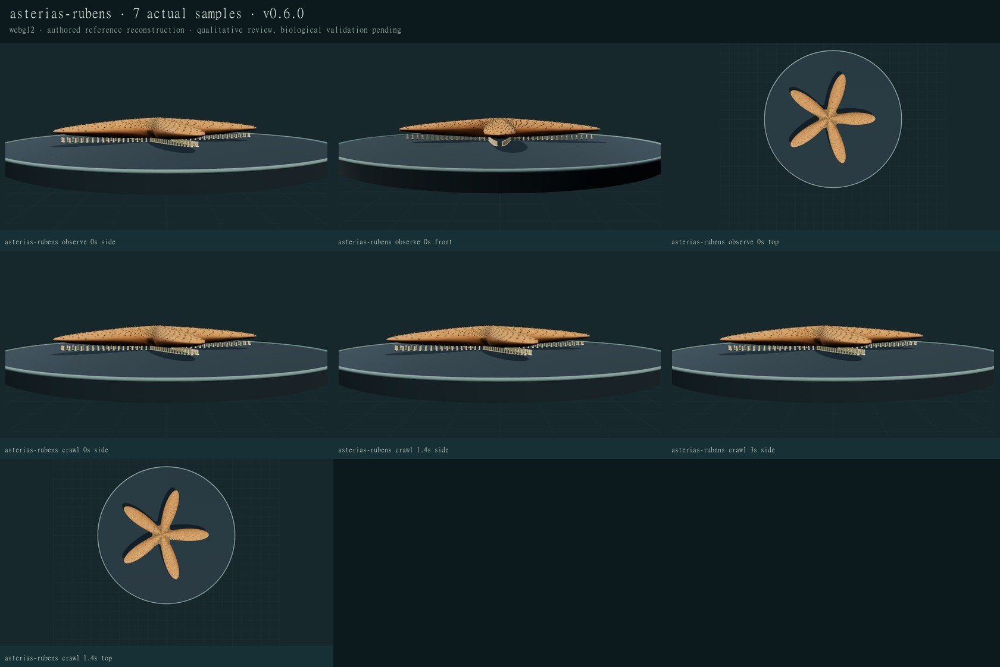
Animalia · Eukaryota · GBIF 5188139 · 7 actual samples · webgl2
Edible sea urchin Echinus esculentus
Open this model and its evidence → Compared and revised: Rounded test, dense radiating spines and separate underside tube-foot cues.
Compared and revised: Rounded test, dense radiating spines and separate underside tube-foot cues.
Remaining inaccuracies: Ambulacral plate pattern, spine articulations and Aristotle's lantern are unresolved. Tube-foot movement is an isolated display study, not locomotion.
Real image: Bengt Littorin · CC BY 2.0 · Original caption, imaging context and terms. Delivered SHA-256 60fa1f388e51fad50bbaba25815e6b85d52c34b5de8392984f58c48b1c29f557.
Source and movement scope
- Edible sea urchin (Echinus esculentus) - MarLIN - The Marine Life Information Network: Species account or morphology/biology context only. No measured geometry, trajectory, rate or physiological model imported. Retrieved source account; general morphology only, not validation of this reconstruction. Retrieval: readable account.
- GBIF · Accepted species taxonomy: Taxonomic name/rank/family matching only; not behavior or native-range evidence.
- Licensed real organism reference and imaging context: Actual reference image and original caption/creator/license; not universal phenotype or biological validation.
- Tube-foot study · partial: Authored reference reconstruction from qualitative morphology and the separately licensed image. Shape, pigmentation, stage, dimensions and playback are not measured or independently validated. Appendage/deformation controls are partial studies; feeding, forces, fluid dynamics and calibrated locomotion are absent.
Same model identifier: reference-echinus-esculentus. Display seconds have no calibrated biological time.
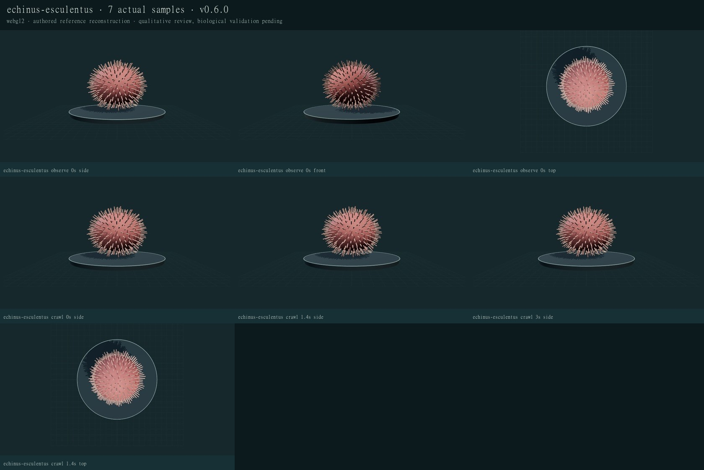
Animalia · Eukaryota · GBIF 2279084 · 3 actual samples · webgl2
Eccentric sand dollar Dendraster excentricus
Open this model and its evidence → Compared and revised: Flattened living-test color and short spines; off-centre five petaloids.
Compared and revised: Flattened living-test color and short spines; off-centre five petaloids.
Remaining inaccuracies: Petal/gonopore geometry and spine fields need specimen measurements. Particle capture remains unavailable; bare beach tests are not living skin references.
Real image: louisiv826 · CC BY 4.0 · Original caption, imaging context and terms. Delivered SHA-256 9451dec8acd0423709262129e7bb33bd67d4d5694947186765e7605f31c9809c.
Source and movement scope
- Dendraster excentricus: Species account or morphology/biology context only. No measured geometry, trajectory, rate or physiological model imported. Retrieved source account; general morphology only, not validation of this reconstruction. Retrieval: readable account.
- GBIF · Accepted species taxonomy: Taxonomic name/rank/family matching only; not behavior or native-range evidence.
- Licensed real organism reference and imaging context: Actual reference image and original caption/creator/license; not universal phenotype or biological validation.
- Particle capture — pending · unavailable: Biological process documented in the species context; no working simulation of this mechanism is claimed.
Same model identifier: reference-dendraster-excentricus. Display seconds have no calibrated biological time.
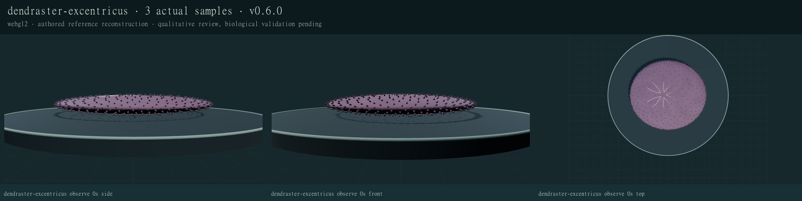
Animalia · Eukaryota · GBIF 2279156 · 7 actual samples · webgl2
Tubular sea cucumber Holothuria tubulosa
Open this model and its evidence → Compared and revised: Reduced pale bead-like nodules; shortened the oral display and changed ten tentacle cues to twenty following the Cerbère-Banyuls reserve account.
Compared and revised: Reduced pale bead-like nodules; shortened the oral display and changed ten tentacle cues to twenty following the Cerbère-Banyuls reserve account.
Remaining inaccuracies: Tentacle branching, ventral tube-foot distribution, ossicles and body-wall deformation are incomplete. Sources differ in terminology for dorsal relief; the surface is qualitative. The action is oral motion only, not crawling or sediment ingestion.
Real image: Rpillon · CC BY-SA 3.0 · Original caption, imaging context and terms. Delivered SHA-256 6a26238b3e7e533666d0cd359cdb81f8cfe1601f3ad4339ce041fea330991ec9.
Source and movement scope
- Holothuria tubulosa - Museu Virtual Biodiversidade: Morphology/biology context only; no measured geometry or movement imported. Retrieved source account; general morphology only, not validation of this reconstruction. Retrieval: readable account.
- GBIF · Accepted species taxonomy: Taxonomic name/rank/family matching only; not behavior or native-range evidence.
- Licensed real organism reference and imaging context: Actual reference image and original caption/creator/license; not universal phenotype or biological validation.
- Cerbère-Banyuls marine reserve bulletin 16, January 2019: Reserve natural-history account: twenty short oral tentacles. Institutional field context, not measured geometry or motion.
- Oral-tentacle study · partial: Authored reference reconstruction from qualitative morphology and the separately licensed image. Shape, pigmentation, stage, dimensions and playback are not measured or independently validated. Appendage/deformation controls are partial studies; feeding, forces, fluid dynamics and calibrated locomotion are absent.
Same model identifier: reference-holothuria-tubulosa. Display seconds have no calibrated biological time.
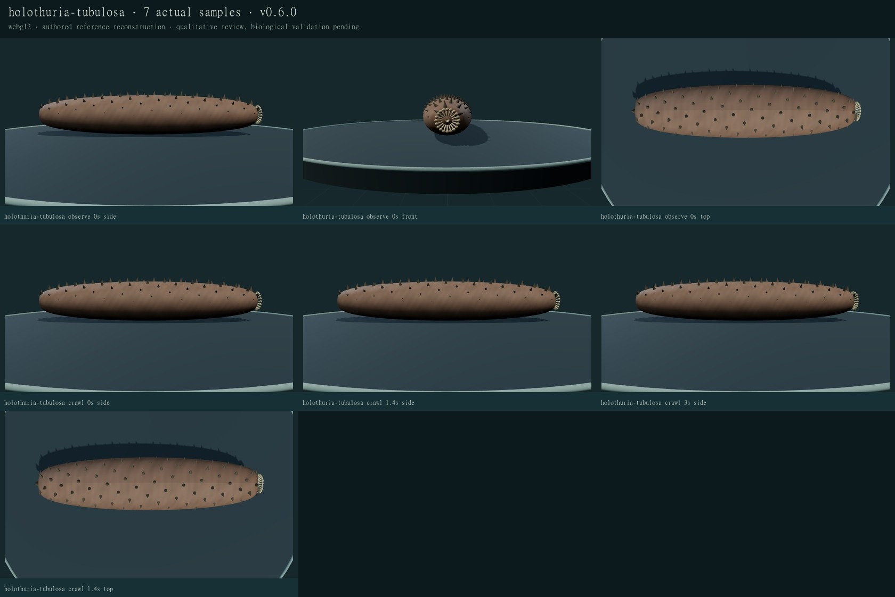
Animalia · Eukaryota · GBIF 2270661 · 7 actual samples · webgl2
Seven-armed sea star Luidia ciliaris
Open this model and its evidence → Compared and revised: Continuous seven-arm body; removed disc-like ends from the tube-foot cues.
Compared and revised: Continuous seven-arm body; removed disc-like ends from the tube-foot cues.
Remaining inaccuracies: Marginal spines, narrow ambulacral anatomy and nonuniform arm taper require refinement. Tube-foot display does not reproduce substrate interaction.
Real image: Luidia_ciliaris.001_-_Aquarium_Finisterrae.JPG : Fernando Losada Rodríguez derivative work: Cwmhiraeth ( talk ) · CC BY-SA 4.0 · Original caption, imaging context and terms. Delivered SHA-256 7d5ed4f7c8640fa1d356cdbc78c57d63362f0b756a30b8bc49a12d4b0380ae0d.
Source and movement scope
- Seven-armed starfish (Luidia ciliaris) - MarLIN - The Marine Life Information Network: Species account or morphology/biology context only. No measured geometry, trajectory, rate or physiological model imported. Retrieved source account; general morphology only, not validation of this reconstruction. Retrieval: readable account.
- GBIF · Accepted species taxonomy: Taxonomic name/rank/family matching only; not behavior or native-range evidence.
- Licensed real organism reference and imaging context: Actual reference image and original caption/creator/license; not universal phenotype or biological validation.
- Tube-foot study · partial: Authored reference reconstruction from qualitative morphology and the separately licensed image. Shape, pigmentation, stage, dimensions and playback are not measured or independently validated. Appendage/deformation controls are partial studies; feeding, forces, fluid dynamics and calibrated locomotion are absent.
Same model identifier: reference-luidia-ciliaris. Display seconds have no calibrated biological time.
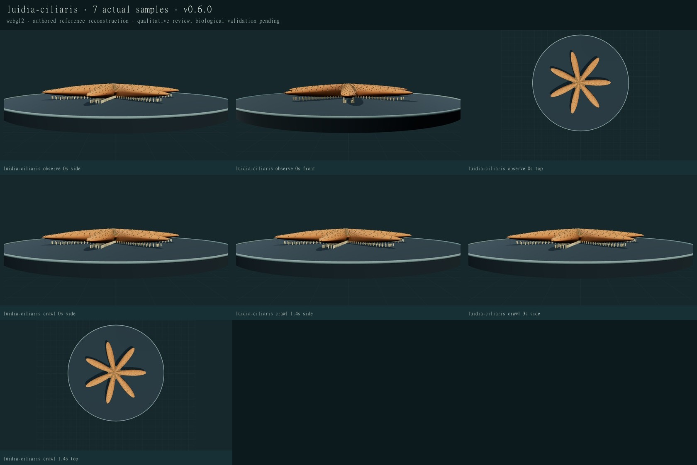
Animalia · Eukaryota · GBIF 5187835 · 7 actual samples · webgl2
Common brittle star Ophiothrix fragilis
Open this model and its evidence → Compared and revised: Small separate disc, long slender arms, repeated lateral spine cues and continuous arm bending.
Compared and revised: Small separate disc, long slender arms, repeated lateral spine cues and continuous arm bending.
Remaining inaccuracies: Arm ossicles, exact spine counts and ventral structures are not reconstructed. Bending lacks measured intersegmental mechanics and substrate contact.
Real image: PedroPVZ · CC BY-SA 3.0 · Original caption, imaging context and terms. Delivered SHA-256 37a7e05f067c0abfcae9dd8e85694954b62e734d79888843251619a38d81b14b.
Source and movement scope
- Common brittlestar (Ophiothrix fragilis) - MarLIN - The Marine Life Information Network: Species account or morphology/biology context only. No measured geometry, trajectory, rate or physiological model imported. Retrieved source account; general morphology only, not validation of this reconstruction. Retrieval: readable account.
- GBIF · Accepted species taxonomy: Taxonomic name/rank/family matching only; not behavior or native-range evidence.
- Licensed real organism reference and imaging context: Actual reference image and original caption/creator/license; not universal phenotype or biological validation.
- Arm-flexion study · partial: Authored reference reconstruction from qualitative morphology and the separately licensed image. Shape, pigmentation, stage, dimensions and playback are not measured or independently validated. Appendage/deformation controls are partial studies; feeding, forces, fluid dynamics and calibrated locomotion are absent.
Same model identifier: reference-ophiothrix-fragilis. Display seconds have no calibrated biological time.
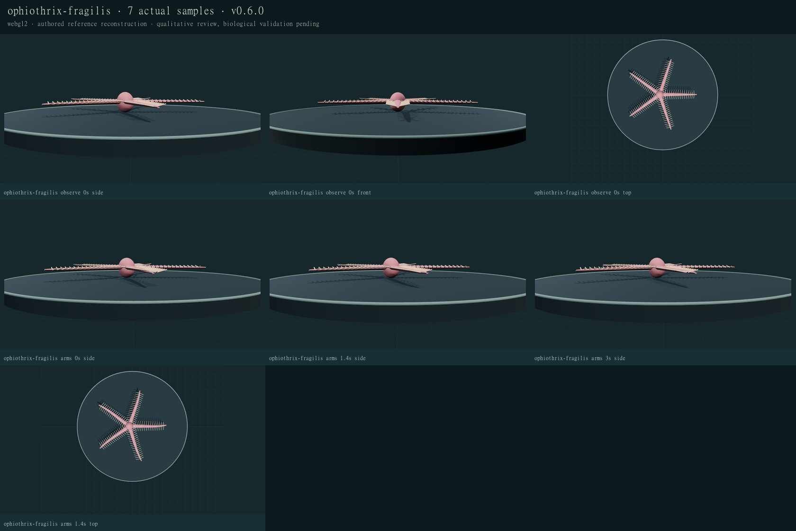
Animalia · Eukaryota · GBIF 5184681 · 7 actual samples · webgl2
Staghorn coral Acropora cervicornis
Open this model and its evidence → Compared and revised: Branching colony with local corallite and hexameral polyp cues on the retained surface.
Compared and revised: Branching colony with local corallite and hexameral polyp cues on the retained surface.
Remaining inaccuracies: Axial/radial corallite differentiation, branch irregularity and tissue microtexture need closer specimen reconstruction. Extension is a small authored rotation; feeding, bleaching and reef growth are absent.
Real image: Albert Kok at Dutch Wikipedia ( Original text: albert kok ) · Public domain · Original caption, imaging context and terms. Delivered SHA-256 4c90bced6278ef5d54015c7a38953b8b0bcbff39430db1a4eb5fe9f40ed02958.
Source and movement scope
- Staghorn Coral | NOAA Fisheries: Species account or morphology/biology context only. No measured geometry, trajectory, rate or physiological model imported. Retrieved source account; general morphology only, not validation of this reconstruction. Retrieval: readable account.
- GBIF · Accepted species taxonomy: Taxonomic name/rank/family matching only; not behavior or native-range evidence.
- Licensed real organism reference and imaging context: Actual reference image and original caption/creator/license; not universal phenotype or biological validation.
- Polyp extension study · partial: Authored reference reconstruction from qualitative morphology and the separately licensed image. Shape, pigmentation, stage, dimensions and playback are not measured or independently validated. Appendage/deformation controls are partial studies; feeding, forces, fluid dynamics and calibrated locomotion are absent.
Same model identifier: reference-acropora-cervicornis. Display seconds have no calibrated biological time.
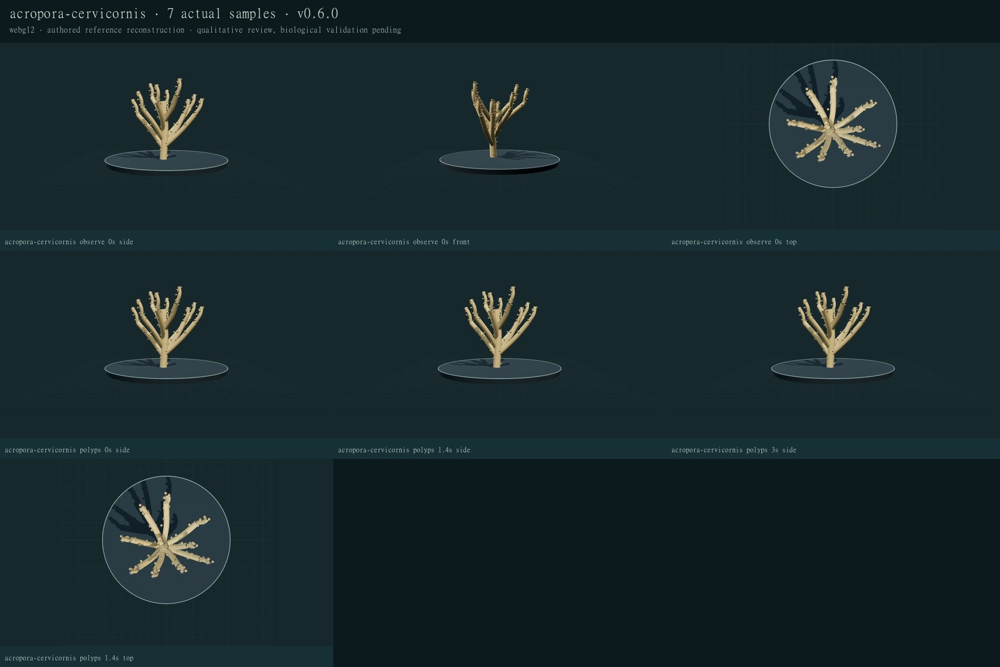
Animalia · Eukaryota · GBIF 5184779 · 7 actual samples · webgl2
Finger coral Porites porites
Open this model and its evidence → Compared and revised: Thicker finger-like branches and quieter surface corallite cues distinguish it from Acropora.
Compared and revised: Thicker finger-like branches and quieter surface corallite cues distinguish it from Acropora.
Remaining inaccuracies: Colony form, calice/septal detail and polyp density are idealized; precise polyp anatomy and tissue continuity are unresolved. No measured feeding or colony growth.
Real image: Jstuby · CC0 · Original caption, imaging context and terms. Delivered SHA-256 849631036737d8fae3f635a9864eb0f78d761f8df448cd5f97429feb235537ae.
Source and movement scope
- Corals of the World: Morphology/biology context only; no measured geometry or movement imported. Retrieved source account; general morphology only, not validation of this reconstruction. Retrieval: readable account.
- GBIF · Accepted species taxonomy: Taxonomic name/rank/family matching only; not behavior or native-range evidence.
- Licensed real organism reference and imaging context: Actual reference image and original caption/creator/license; not universal phenotype or biological validation.
- Polyp extension study · partial: Authored reference reconstruction from qualitative morphology and the separately licensed image. Shape, pigmentation, stage, dimensions and playback are not measured or independently validated. Appendage/deformation controls are partial studies; feeding, forces, fluid dynamics and calibrated locomotion are absent.
Same model identifier: reference-porites-porites. Display seconds have no calibrated biological time.
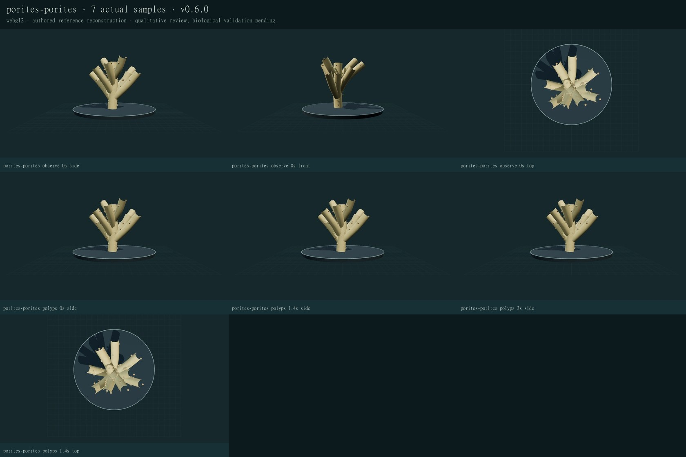
Animalia · Eukaryota · GBIF 5185376 · 3 actual samples · webgl2
Common sea fan Gorgonia ventalina
Open this model and its evidence → Compared and revised: Flattened attached reticulate colony.
Compared and revised: Flattened attached reticulate colony.
Remaining inaccuracies: Mesh regularity is too uniform; natural anastomosis, branch tissue and eight-tentacled polyps need further work. Polyp playback is unavailable, rather than substituting a generic animation.
Real image: NOAA (Maya Walton) · Public domain · Original caption, imaging context and terms. Delivered SHA-256 b40fafe1fc9293a7d061b364356b2934635b53c66ebca38bc42773f99584ab7c.
Source and movement scope
Same model identifier: reference-gorgonia-ventalina. Display seconds have no calibrated biological time.
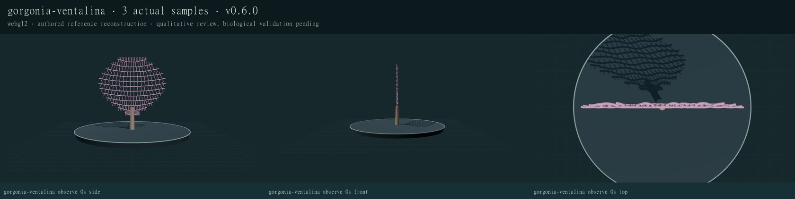
Animalia · Eukaryota · GBIF 5183974 · 7 actual samples · webgl2
Plumose anemone Metridium senile
Open this model and its evidence → Compared and revised: Attached column and numerous slender tentacles.
Compared and revised: Attached column and numerous slender tentacles.
Remaining inaccuracies: The characteristic lobed oral-disc crown is only approximated; fine column texture, mouth and acontia are absent. Tentacle swaying is not a fluid or prey-capture simulation.
Real image: Stan Shebs · CC BY-SA 3.0 · Original caption, imaging context and terms. Delivered SHA-256 72e1dbcfe1204a480a70808dc09ff12e26027cdbfd7cc3ae7be191bdb2f2e3fe.
Source and movement scope
- Plumose anemone (Metridium senile) - MarLIN - The Marine Life Information Network: Species account or morphology/biology context only. No measured geometry, trajectory, rate or physiological model imported. Retrieved source account; general morphology only, not validation of this reconstruction. Retrieval: readable account.
- GBIF · Accepted species taxonomy: Taxonomic name/rank/family matching only; not behavior or native-range evidence.
- Licensed real organism reference and imaging context: Actual reference image and original caption/creator/license; not universal phenotype or biological validation.
- Tentacle study · partial: Authored reference reconstruction from qualitative morphology and the separately licensed image. Shape, pigmentation, stage, dimensions and playback are not measured or independently validated. Appendage/deformation controls are partial studies; feeding, forces, fluid dynamics and calibrated locomotion are absent.
Same model identifier: reference-metridium-senile. Display seconds have no calibrated biological time.
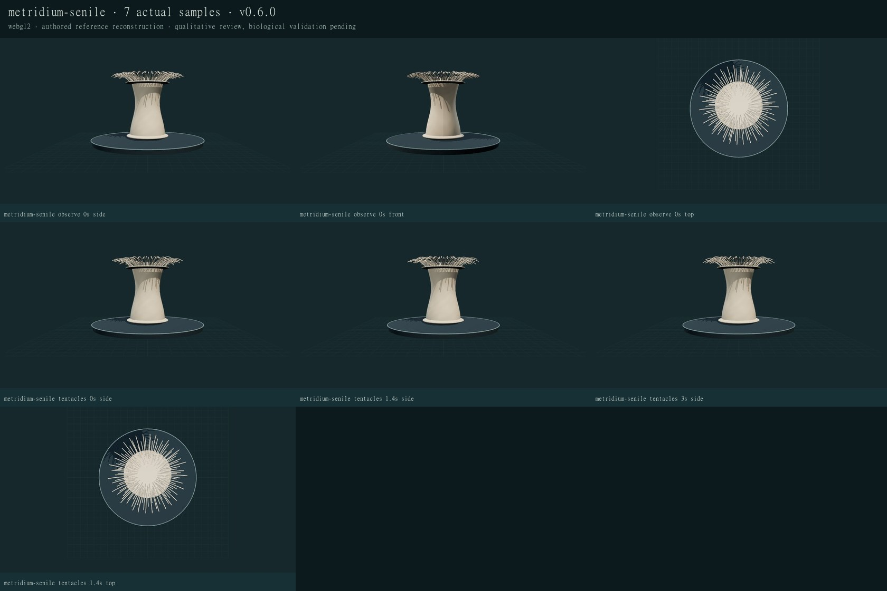
Animalia · Eukaryota · GBIF 2256559 · 7 actual samples · webgl2
Beadlet anemone Actinia equina
Open this model and its evidence → Compared and revised: Attached red column, oral disc and peripheral blue acrorhagus cues.
Compared and revised: Attached red column, oral disc and peripheral blue acrorhagus cues.
Remaining inaccuracies: Tentacle arrangement/count and individual color variation require validation. Mouth/column contraction and intertidal attachment forces are absent; tentacles only sway qualitatively.
Real image: Diego Delso · CC BY-SA 4.0 · Original caption, imaging context and terms. Delivered SHA-256 4fea1a2060bcb3e769543ab4a1927eac9a97672c045e294d50d83674954cd268.
Source and movement scope
- Beadlet anemone (Actinia equina) - MarLIN - The Marine Life Information Network: Species account or morphology/biology context only. No measured geometry, trajectory, rate or physiological model imported. Retrieved source account; general morphology only, not validation of this reconstruction. Retrieval: readable account.
- GBIF · Accepted species taxonomy: Taxonomic name/rank/family matching only; not behavior or native-range evidence.
- Licensed real organism reference and imaging context: Actual reference image and original caption/creator/license; not universal phenotype or biological validation.
- Tentacle study · partial: Authored reference reconstruction from qualitative morphology and the separately licensed image. Shape, pigmentation, stage, dimensions and playback are not measured or independently validated. Appendage/deformation controls are partial studies; feeding, forces, fluid dynamics and calibrated locomotion are absent.
Same model identifier: reference-actinia-equina. Display seconds have no calibrated biological time.
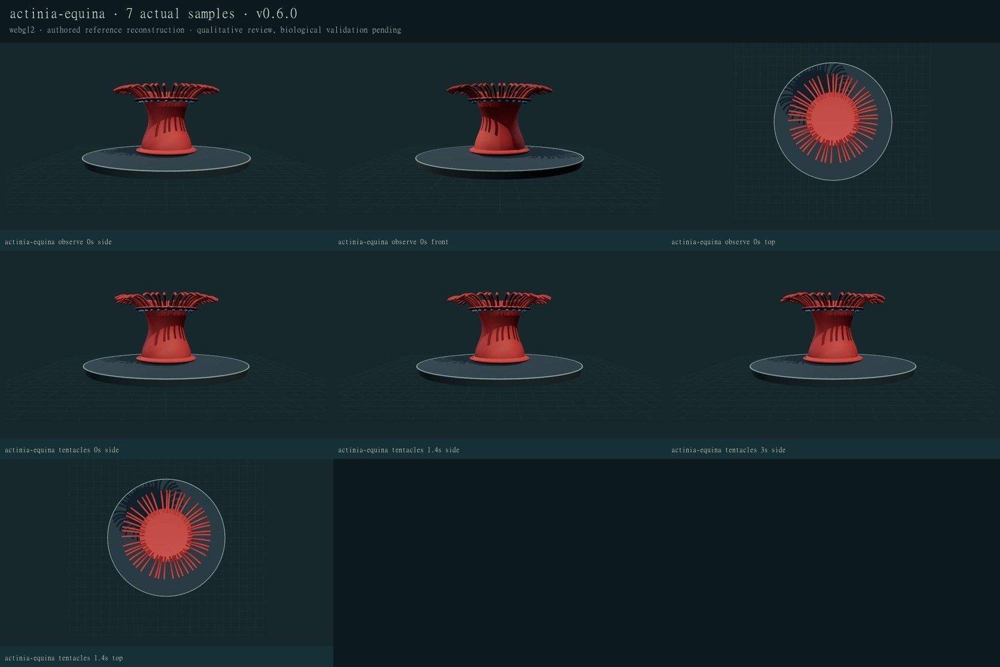
Animalia · Eukaryota · GBIF 5185782 · 7 actual samples · webgl2
Freshwater hydra Hydra vulgaris
Open this model and its evidence → Compared and revised: Slender attached polyp with tentacles and a held contraction study.
Compared and revised: Slender attached polyp with tentacles and a held contraction study.
Remaining inaccuracies: Reference photograph is genus-level Hydra context; historic laboratory genome taxonomy is not a verified phenotype for this exact image. Cnidocytes, budding and internal anatomy are unresolved. Contraction is surface scaling, not cellular mechanics.
Real image: Przemysław Malkowski · CC BY-SA 3.0 · Original caption, imaging context and terms. Delivered SHA-256 7726f2a8e6f2d8dcb44d6666ad1021560b3384b37eec9c56faae8b9dbd200dfe.
Source and movement scope
- Biology reference · Hydra vulgaris: Morphology/biology context only; no measured geometry or movement imported. Full source retrieval was limited; source identity/indexed context and geometry require further review. The genome paper uses historical Hydra magnipapillata laboratory naming; the source photo caption identifies Hydra at genus level, not a genetically verified H. vulgaris individual. Retrieval: limited; further reading needed.
- GBIF · Accepted species taxonomy: Taxonomic name/rank/family matching only; not behavior or native-range evidence.
- Licensed real organism reference and imaging context: Actual reference image and original caption/creator/license; not universal phenotype or biological validation.
- Contraction study · partial: Authored reference reconstruction from qualitative morphology and the separately licensed image. Shape, pigmentation, stage, dimensions and playback are not measured or independently validated. Appendage/deformation controls are partial studies; feeding, forces, fluid dynamics and calibrated locomotion are absent.
Same model identifier: reference-hydra-vulgaris. Display seconds have no calibrated biological time.
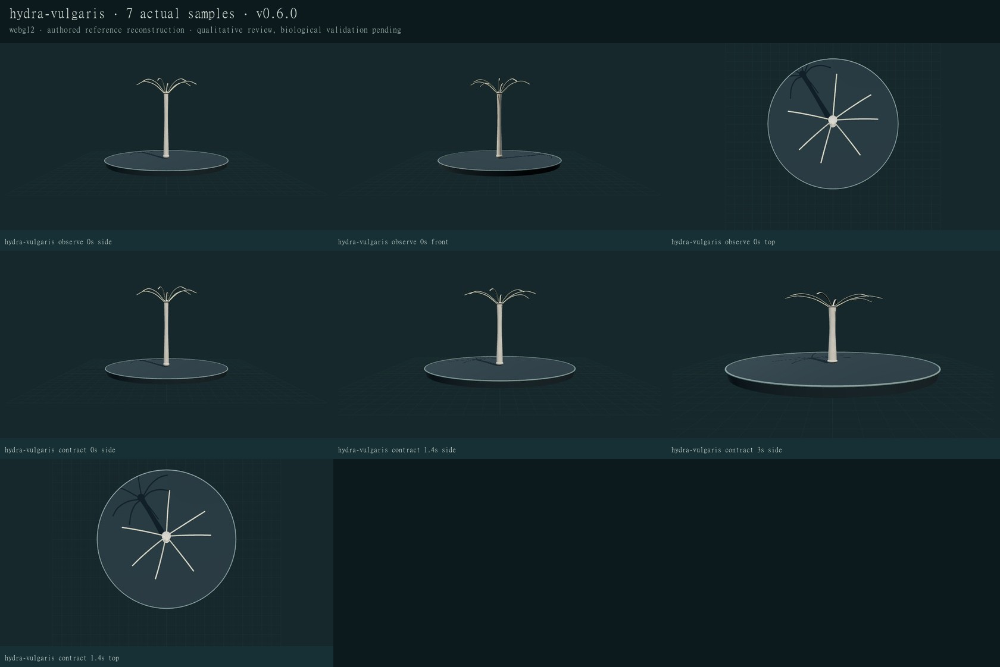
Animalia · Eukaryota · GBIF 2283683 · 7 actual samples · webgl2
C. elegans nematode Caenorhabditis elegans
Open this model and its evidence → Compared and revised: Slender tapered translucent body with continuous travelling deformation.
Compared and revised: Slender tapered translucent body with continuous travelling deformation.
Remaining inaccuracies: Cuticle annuli, pharynx, sex/stage-specific tail and organs are incomplete. The wave is neither a calibrated agar gait nor a fluid model. WormBook retrieval was limited; no measured wave parameters were imported.
Real image: The original uploader was Kbradnam at English Wikipedia . ( Original text: Zeynep F. Altun, Editor of www.wormatlas.org ) · CC BY-SA 2.5 · Original caption, imaging context and terms. Delivered SHA-256 8d965b22fca6b0bf27b6d5baa8c6bc538f4369262be71679669c9ef9cf0f607e.
Source and movement scope
- Biology reference · Caenorhabditis elegans: Morphology/biology context only; no measured geometry or movement imported. Full source retrieval was limited; source identity/indexed context and geometry require further review. Retrieval: limited; further reading needed.
- GBIF · Accepted species taxonomy: Taxonomic name/rank/family matching only; not behavior or native-range evidence.
- Licensed real organism reference and imaging context: Actual reference image and original caption/creator/license; not universal phenotype or biological validation.
- Undulation study · partial: Authored reference reconstruction from qualitative morphology and the separately licensed image. Shape, pigmentation, stage, dimensions and playback are not measured or independently validated. Appendage/deformation controls are partial studies; feeding, forces, fluid dynamics and calibrated locomotion are absent.
Same model identifier: reference-caenorhabditis-elegans. Display seconds have no calibrated biological time.
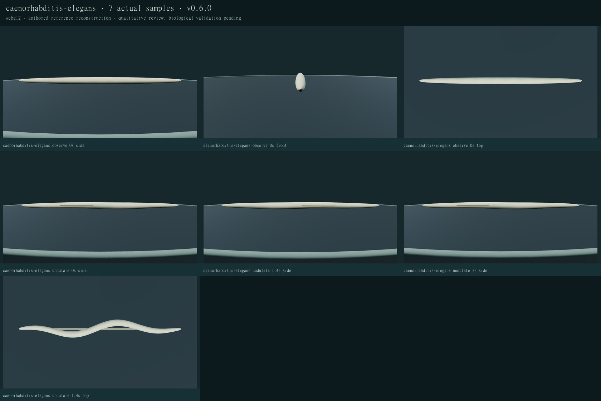
Animalia · Eukaryota · GBIF 5892123 · 7 actual samples · webgl2
Mediterranean planarian Schmidtea mediterranea
Open this model and its evidence → Compared and revised: Flattened body, broader head region and paired eye cues; removed a distribution-map candidate from the photo selection.
Compared and revised: Flattened body, broader head region and paired eye cues; removed a distribution-map candidate from the photo selection.
Remaining inaccuracies: Head/auricle contours and ventral cilia need specimen-level verification. Gliding is whole-body translation without pedal/ciliary traction; source identity is not independently confirmed.
Real image: Claire G. Stevenson, Wendy Scott Beane · CC BY 2.5 · Original caption, imaging context and terms. Delivered SHA-256 5dc2842eb73fd13f5e2cc8ccc1ea42c649dfcadf5e1382a02b37d4a39f573cba.
Source and movement scope
- Biology reference · Schmidtea mediterranea: Species account or morphology/biology context only. No measured geometry, trajectory, rate or physiological model imported. Full source retrieval was limited; source identity/indexed context and geometry require further review. Retrieval: limited; further reading needed.
- GBIF · Accepted species taxonomy: Taxonomic name/rank/family matching only; not behavior or native-range evidence.
- Licensed real organism reference and imaging context: Actual reference image and original caption/creator/license; not universal phenotype or biological validation.
- Gliding study · partial: Authored reference reconstruction from qualitative morphology and the separately licensed image. Shape, pigmentation, stage, dimensions and playback are not measured or independently validated. Appendage/deformation controls are partial studies; feeding, forces, fluid dynamics and calibrated locomotion are absent.
Same model identifier: reference-schmidtea-mediterranea. Display seconds have no calibrated biological time.
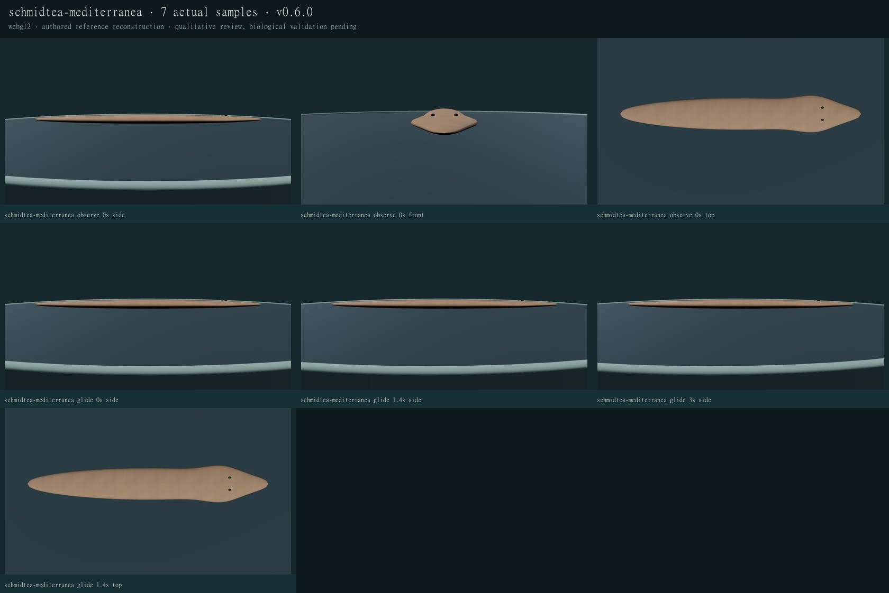
Animalia · Eukaryota · GBIF 2291253 · 7 actual samples · webgl2
Great pond snail Lymnaea stagnalis
Open this model and its evidence → Compared and revised: Replaced separated open coils with a continuous tall shell above the foot and broad triangular tentacles.
Compared and revised: Replaced separated open coils with a continuous tall shell above the foot and broad triangular tentacles.
Remaining inaccuracies: Whorl growth, aperture/lip, mantle and shell chirality need an anatomical reconstruction. No pedal waves or pneumostome motion; translation and tentacle gestures are partial.
Real image: Rex (RexNL) · Public domain · Original caption, imaging context and terms. Delivered SHA-256 1debad4c168711b20077572b86383ca23cb5be31863f581de5a139ee26a6d2cc.
Source and movement scope
- Biology reference · Lymnaea stagnalis: Morphology/biology context only; no measured geometry or movement imported. Full source retrieval was limited; source identity/indexed context and geometry require further review. Retrieval: limited; further reading needed.
- GBIF · Accepted species taxonomy: Taxonomic name/rank/family matching only; not behavior or native-range evidence.
- Licensed real organism reference and imaging context: Actual reference image and original caption/creator/license; not universal phenotype or biological validation.
- Gliding study · partial: Authored reference reconstruction from qualitative morphology and the separately licensed image. Shape, pigmentation, stage, dimensions and playback are not measured or independently validated. Appendage/deformation controls are partial studies; feeding, forces, fluid dynamics and calibrated locomotion are absent.
Same model identifier: reference-lymnaea-stagnalis. Display seconds have no calibrated biological time.
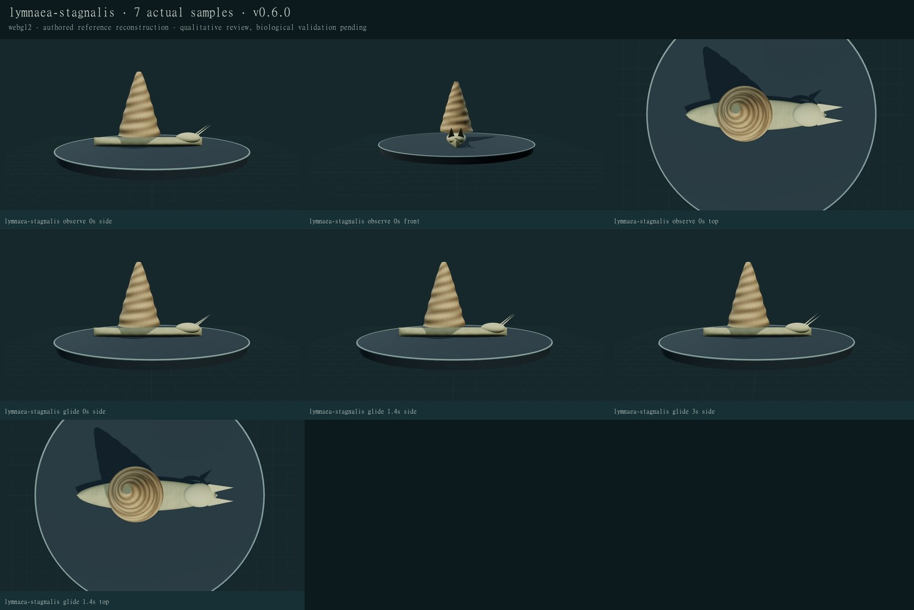
Animalia · Eukaryota · GBIF 5858758 · 7 actual samples · webgl2
Garden snail Cornu aspersum
Open this model and its evidence → Compared and revised: Replaced floating disconnected coil with a continuous globose banded shell; kept two upper and two lower tentacle pairs.
Compared and revised: Replaced floating disconnected coil with a continuous globose banded shell; kept two upper and two lower tentacle pairs.
Remaining inaccuracies: The sculpted spiral is a surface cue, not validated shell coiling/aperture geometry. Pedal waves, mucus and retraction are absent. Photo is an individual phenotype, not a universal band pattern.
Real image: Jon Sullivan / PD Photo.org · Public domain · Original caption, imaging context and terms. Delivered SHA-256 3ed286cb1b75dea00a7e52f3895f74d0b095d5ca6a7835c60b50b3d7750c3be5.
Source and movement scope
- Biology reference · Cornu aspersum: Morphology/biology context only; no measured geometry or movement imported. Full source retrieval was limited; source identity/indexed context and geometry require further review. Retrieval: limited; further reading needed.
- GBIF · Accepted species taxonomy: Taxonomic name/rank/family matching only; not behavior or native-range evidence.
- Licensed real organism reference and imaging context: Actual reference image and original caption/creator/license; not universal phenotype or biological validation.
- Gliding study · partial: Authored reference reconstruction from qualitative morphology and the separately licensed image. Shape, pigmentation, stage, dimensions and playback are not measured or independently validated. Appendage/deformation controls are partial studies; feeding, forces, fluid dynamics and calibrated locomotion are absent.
Same model identifier: reference-cornu-aspersum. Display seconds have no calibrated biological time.
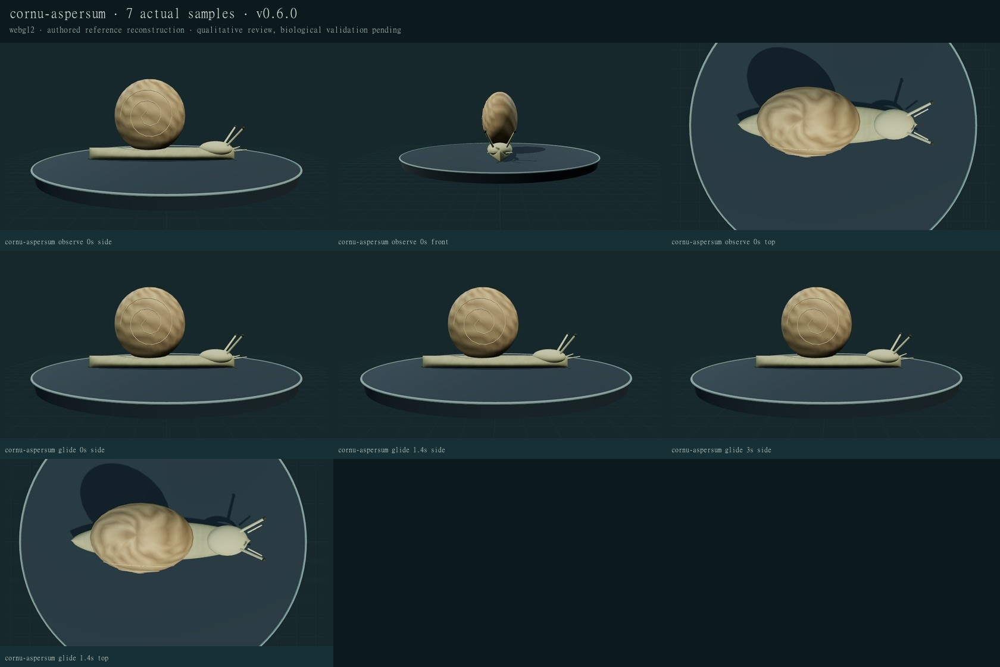
Animalia · Eukaryota · GBIF 8288896 · 3 actual samples · webgl2
Blue mussel Mytilus edulis
Open this model and its evidence → Compared and revised: Elongated paired valves, fine growth cues and byssus-like attachment threads.
Compared and revised: Elongated paired valves, fine growth cues and byssus-like attachment threads.
Remaining inaccuracies: Hinge, mantle and gills need refinement. The reference image shows exposed/dissected tissue and is not a live gape-posture standard. Filtration is unavailable.
Real image: Rainer Zenz · CC BY-SA 3.0 · Original caption, imaging context and terms. Delivered SHA-256 55c5499f8e707bad8dd8e4901f6c934ec1913211a1332863eb8657dd5d37f51f.
Source and movement scope
Same model identifier: reference-mytilus-edulis. Display seconds have no calibrated biological time.
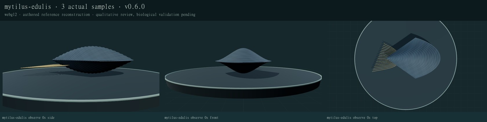
Animalia · Eukaryota · GBIF 2285980 · 7 actual samples · webgl2
Great scallop Pecten maximus
Open this model and its evidence → Compared and revised: Radially ribbed paired valves and hinge-ear cues; small same-valve clap.
Compared and revised: Radially ribbed paired valves and hinge-ear cues; small same-valve clap.
Remaining inaccuracies: Valve outline/rib counts, mantle eyes and hinge ligament are approximate. The photo includes shell views rather than a measured live movement; clapping has no jet or hydrodynamics.
Real image: Manfred Heyde · CC BY-SA 3.0 · Original caption, imaging context and terms. Delivered SHA-256 f4e98188fbf75c355cb9b6a5a3afe5bdef01e57bdb81006a31002310e1366bd9.
Source and movement scope
- Pecten maximus - BIOTIC: Species account or morphology/biology context only. No measured geometry, trajectory, rate or physiological model imported. Retrieved source account; general morphology only, not validation of this reconstruction. Retrieval: readable account.
- GBIF · Accepted species taxonomy: Taxonomic name/rank/family matching only; not behavior or native-range evidence.
- Licensed real organism reference and imaging context: Actual reference image and original caption/creator/license; not universal phenotype or biological validation.
- Valve-clap study · partial: Authored reference reconstruction from qualitative morphology and the separately licensed image. Shape, pigmentation, stage, dimensions and playback are not measured or independently validated. Appendage/deformation controls are partial studies; feeding, forces, fluid dynamics and calibrated locomotion are absent.
Same model identifier: reference-pecten-maximus. Display seconds have no calibrated biological time.
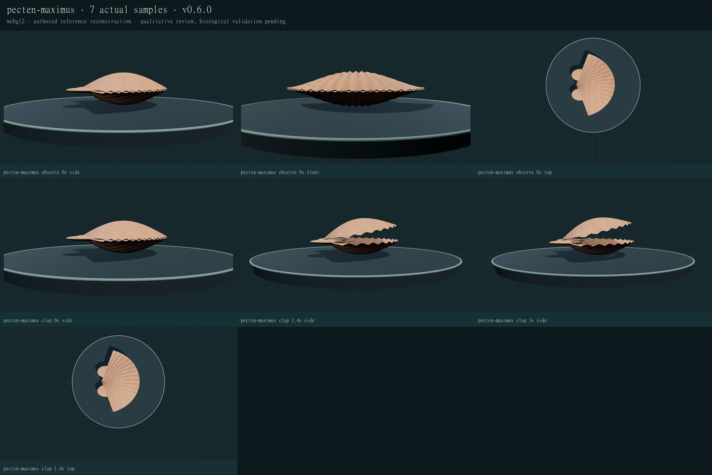
Animalia · Eukaryota · GBIF 2286060 · 3 actual samples · webgl2
European flat oyster Ostrea edulis
Open this model and its evidence → Compared and revised: Replaced a fan/zigzag pattern with oval unequal valves and subtle concentric relief.
Compared and revised: Replaced a fan/zigzag pattern with oval unequal valves and subtle concentric relief.
Remaining inaccuracies: Individual shell irregularity, hinge and mantle anatomy remain incomplete. Open-shell photographic material is not a live posture standard. Filtration is unavailable.
Real image: [H. Zell] · CC BY-SA 3.0 · Original caption, imaging context and terms. Delivered SHA-256 61cbf4032cb899dc0f6a7a36de2d129f095fbc7075443e2f236c3de2a17e2c41.
Source and movement scope
Same model identifier: reference-ostrea-edulis. Display seconds have no calibrated biological time.
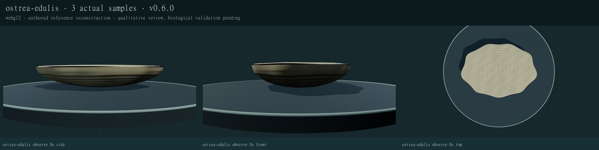
Animalia · Eukaryota · GBIF 2234822 · 7 actual samples · webgl2
Large water flea Daphnia magna
Open this model and its evidence → Compared and revised: Translucent carapace, a compound-eye cue and branched second antennae.
Compared and revised: Translucent carapace, a compound-eye cue and branched second antennae.
Remaining inaccuracies: Rostrum, appendage setae, brood chamber and internal structures remain approximate. The reference adult carries a clutch not reproduced here; antenna beats do not simulate swimming forces.
Real image: Dieter Ebert, Basel, Switzerland · CC BY-SA 4.0 · Original caption, imaging context and terms. Delivered SHA-256 3d0bd585237b87d9471324cafbce7305d7219328be8f90dcc0cea2c7260ab707.
Source and movement scope
- Daphnia magna | INFORMATION | Animal Diversity Web: Species account or morphology/biology context only. No measured geometry, trajectory, rate or physiological model imported. Retrieved source account; general morphology only, not validation of this reconstruction. Retrieval: readable account.
- GBIF · Accepted species taxonomy: Taxonomic name/rank/family matching only; not behavior or native-range evidence.
- Licensed real organism reference and imaging context: Actual reference image and original caption/creator/license; not universal phenotype or biological validation.
- Antenna-beat study · partial: Authored reference reconstruction from qualitative morphology and the separately licensed image. Shape, pigmentation, stage, dimensions and playback are not measured or independently validated. Appendage/deformation controls are partial studies; feeding, forces, fluid dynamics and calibrated locomotion are absent.
Same model identifier: reference-daphnia-magna. Display seconds have no calibrated biological time.
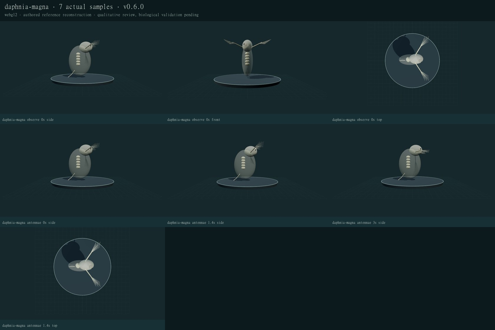
Plantae · Eukaryota · GBIF 5290052 · 7 actual samples · webgl2
Maize Zea mays
Open this model and its evidence → Compared and revised: Replaced rice-like hanging tassel grains with fine branched spikelets; raised covered ear bracts and silk cues; scaled leaf curvature to blade length.
Compared and revised: Replaced rice-like hanging tassel grains with fine branched spikelets; raised covered ear bracts and silk cues; scaled leaf curvature to blade length.
Remaining inaccuracies: Cultivar/sex-stage details, tassel anthers and husk/ear geometry remain idealized. Uniform size interpolation is not leaf, tassel or ear development.
Real image: Akwugo · CC BY-SA 4.0 · Original caption, imaging context and terms. Delivered SHA-256 d44ea251caa9d871c6a481b0a2824c7b3eb29b63994d66cc87f0ce76b5031c2a.
Source and movement scope
Same model identifier: reference-zea-mays. Display seconds have no calibrated biological time.
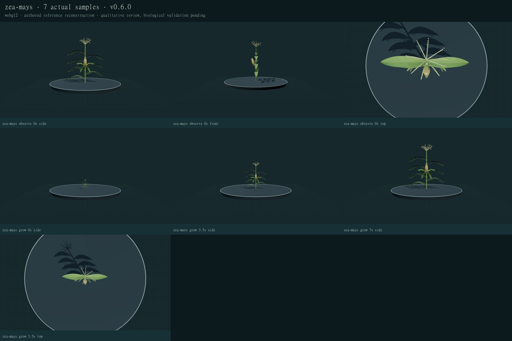
Plantae · Eukaryota · GBIF 7795888 · 7 actual samples · webgl2
Bread wheat Triticum aestivum
Open this model and its evidence → Compared and revised: Narrow veined leaves and a compact terminal wheat spike; blade curvature corrected.
Compared and revised: Narrow veined leaves and a compact terminal wheat spike; blade curvature corrected.
Remaining inaccuracies: Spikelet/glume/floret counts and cultivar awns require closer work. Stem nodes and grain development are incomplete; the only action is an anchored size study.
Real image: INRA DIST from France · CC BY 2.0 · Original caption, imaging context and terms. Delivered SHA-256 94e1250ea13a2d13601757518f7fe02a97b46eb8a7778b3fa0913738c426c360.
Source and movement scope
Same model identifier: reference-triticum-aestivum. Display seconds have no calibrated biological time.
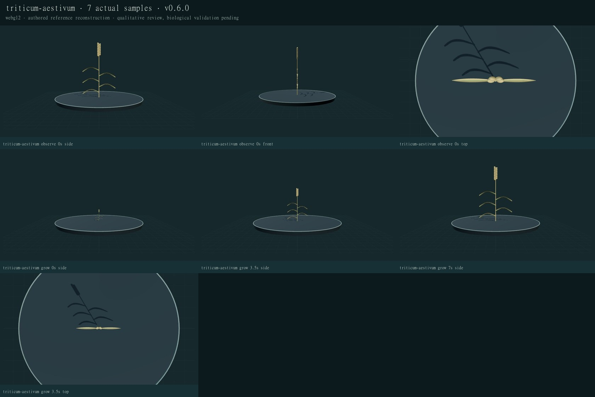
Plantae · Eukaryota · GBIF 2703459 · 7 actual samples · webgl2
Asian rice Oryza sativa
Open this model and its evidence → Compared and revised: Connected grain-bearing panicle branches and corrected narrow leaf curvature.
Compared and revised: Connected grain-bearing panicle branches and corrected narrow leaf curvature.
Remaining inaccuracies: Panicle branching and grain/awn arrangement are cultivar-dependent and unmeasured. IRRI source retrieval was limited; size interpolation is not rice ontogeny.
Real image: Augustus Binu : flickr : Instagram · CC BY-SA 3.0 · Original caption, imaging context and terms. Delivered SHA-256 16b93cd5ab49377bf72d1612386e9e5617e562734d560d7e39836a4afdc32c36.
Source and movement scope
- Biology reference · Oryza sativa: Morphology/biology context only; no measured geometry or movement imported. Full source retrieval was limited; source identity/indexed context and geometry require further review. Retrieval: limited; further reading needed.
- GBIF · Accepted species taxonomy: Taxonomic name/rank/family matching only; not behavior or native-range evidence.
- Licensed real organism reference and imaging context: Actual reference image and original caption/creator/license; not universal phenotype or biological validation.
- Anchored size study · partial: Anchored interpolation of the same mature reference surface. This is a display-size study, not a reconstructed developmental sequence, growth-rate model or organ-level ontogeny.
Same model identifier: reference-oryza-sativa. Display seconds have no calibrated biological time.
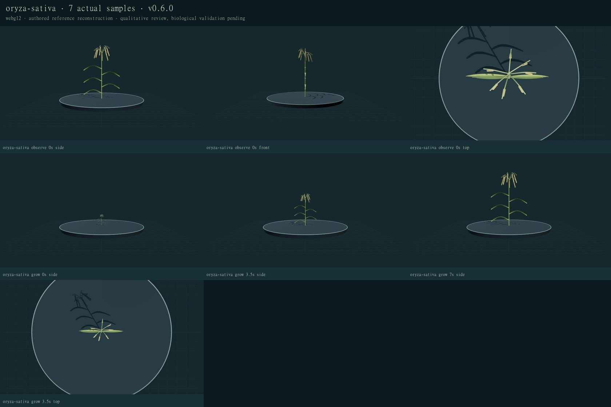
Plantae · Eukaryota · GBIF 2706056 · 7 actual samples · webgl2
Barley Hordeum vulgare
Open this model and its evidence → Compared and revised: Awned terminal barley spike, narrow veined leaves and corrected leaf curvature.
Compared and revised: Awned terminal barley spike, narrow veined leaves and corrected leaf curvature.
Remaining inaccuracies: Two-row/six-row cultivar identity and exact spikelet/awn architecture are not validated. No germination, grain development or measured growth.
Real image: Cliff from Arlington, Virginia, USA · CC BY 2.0 · Original caption, imaging context and terms. Delivered SHA-256 8c32814077d6786604ceef9ef4f7c8f43c80a86e58f2e602e95b84fcf13bf4fb.
Source and movement scope
- Hordeum vulgare (Barley) | North Carolina Extension Gardener Plant Toolbox: Species account or morphology/biology context only. No measured geometry, trajectory, rate or physiological model imported. Retrieved source account; general morphology only, not validation of this reconstruction. Retrieval: readable account.
- GBIF · Accepted species taxonomy: Taxonomic name/rank/family matching only; not behavior or native-range evidence.
- Licensed real organism reference and imaging context: Actual reference image and original caption/creator/license; not universal phenotype or biological validation.
- Anchored size study · partial: Anchored interpolation of the same mature reference surface. This is a display-size study, not a reconstructed developmental sequence, growth-rate model or organ-level ontogeny.
Same model identifier: reference-hordeum-vulgare. Display seconds have no calibrated biological time.
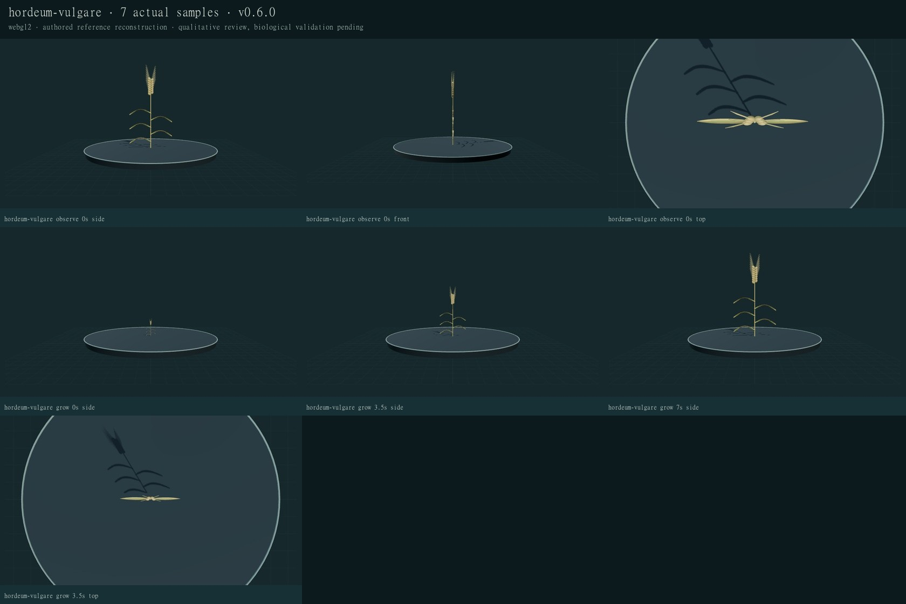
Plantae · Eukaryota · GBIF 2927305 · 7 actual samples · webgl2
English lavender Lavandula angustifolia
Open this model and its evidence → Compared and revised: Reduced overlapping flower masses into separated whorls; corrected small-leaf curvature.
Compared and revised: Reduced overlapping flower masses into separated whorls; corrected small-leaf curvature.
Remaining inaccuracies: Bilateral corolla, calyx, pubescence and cultivar inflorescence proportions need refinement. Surface colors are numerical illustrations; mature-form scaling is not flowering.
Real image: Forest & Kim Starr · CC BY 3.0 · Original caption, imaging context and terms. Delivered SHA-256 8d259ba1e7bc9ba0b6f8db237e0228d72e3958b719dab0849cb3657fe3ab705c.
Source and movement scope
Same model identifier: reference-lavandula-angustifolia. Display seconds have no calibrated biological time.
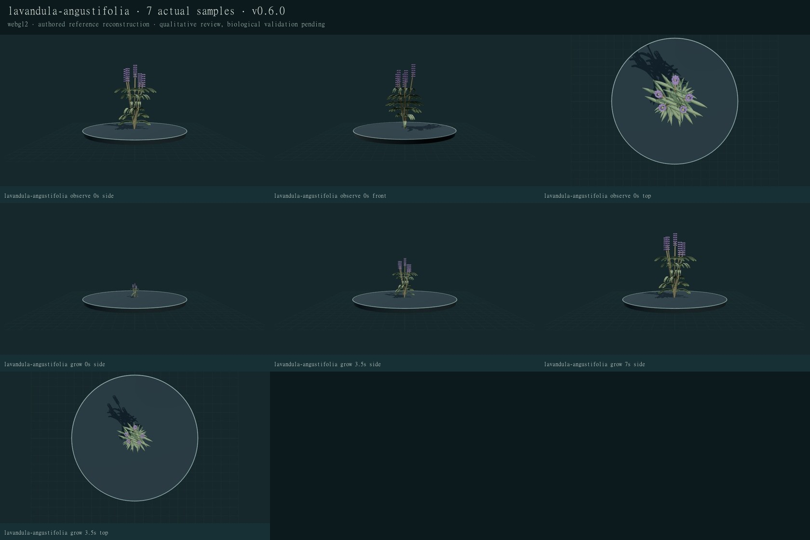
Plantae · Eukaryota · GBIF 10902460 · 7 actual samples · webgl2
Rosemary Salvia rosmarinus
Open this model and its evidence → Compared and revised: Narrow leaves and smaller separated flower whorls instead of an overlapping flower column.
Compared and revised: Narrow leaves and smaller separated flower whorls instead of an overlapping flower column.
Remaining inaccuracies: Revolute leaf margins, pale hairy underside and flower bilateral anatomy remain incomplete. The authored size study is not measured growth.
Real image: Margalob · CC BY-SA 4.0 · Original caption, imaging context and terms. Delivered SHA-256 f58902679c2cc08b920f1807ae8318137d0d02f91b25d580384e94bfe2ed0722.
Source and movement scope
- Salvia rosmarinus (Rosemary) | North Carolina Extension Gardener Plant Toolbox: Species account or morphology/biology context only. No measured geometry, trajectory, rate or physiological model imported. Retrieved source account; general morphology only, not validation of this reconstruction. Retrieval: readable account.
- GBIF · Accepted species taxonomy: Taxonomic name/rank/family matching only; not behavior or native-range evidence.
- Licensed real organism reference and imaging context: Actual reference image and original caption/creator/license; not universal phenotype or biological validation.
- Anchored size study · partial: Anchored interpolation of the same mature reference surface. This is a display-size study, not a reconstructed developmental sequence, growth-rate model or organ-level ontogeny.
Same model identifier: reference-salvia-rosmarinus. Display seconds have no calibrated biological time.
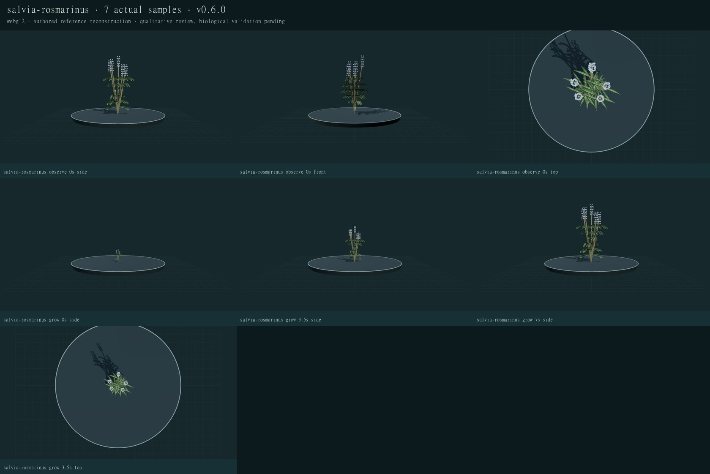
Plantae · Eukaryota · GBIF 2927175 · 7 actual samples · webgl2
Spearmint Mentha spicata
Open this model and its evidence → Compared and revised: Opposite leaves with secondary veins and separated flower whorls; corrected leaf curvature.
Compared and revised: Opposite leaves with secondary veins and separated flower whorls; corrected leaf curvature.
Remaining inaccuracies: Leaf serrations, glandular hairs and corolla/calyx anatomy are approximate. Flowering and essential-oil physiology are not simulated.
Real image: Simon Eugster -- Simon 13:07, 2 July 2006 (UTC) · CC BY-SA 3.0 · Original caption, imaging context and terms. Delivered SHA-256 9538bf9f35c7905eb9f39b193baad1d31824050f674b7c3123d5508526e0a33a.
Source and movement scope
Same model identifier: reference-mentha-spicata. Display seconds have no calibrated biological time.
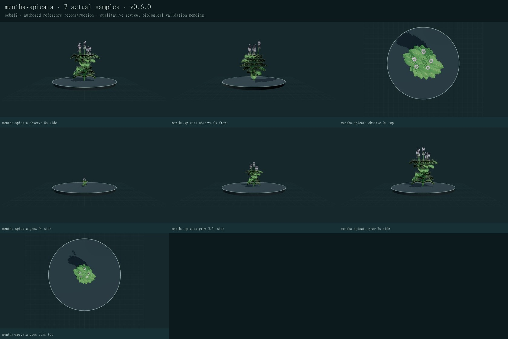
Plantae · Eukaryota · GBIF 2927096 · 7 actual samples · webgl2
Sweet basil Ocimum basilicum
Open this model and its evidence →![Location taken: Behnke Nurseries, Beltsville, MD USA. Names: Ocimum basilicum L., Adi reyhan, Ajaganothika, Albacar, Albahaca, Albahaca Común, Albahaca Silvestre, Albaka, Albaraka, Alfábega, Alfàbrega, Alfavacão (Brazil), Alfavaca, Alfavaca-Cheirosa (Brazil), Alhábega, Alrihan, Asubiote, Ba-Sil, Ba-So-Bi-La, Ba-Zi-Ru, Babui Tulsi, Babuitulsi, Babul, Baburi Tulsi, Bahari, Bajiru, Balanoi, Balanoy, Balicot, Barbar, Baricot, Basílico, Basali, Basèli, Basièli, Basiilik, Basil, Basilic, Basilic (plante), Basilic Commun, Basilica, Basilico, Basilicum, Basilie, Basilienkraut, Basilik, Basilika, Basilika (krydda), Basilikós, Basilikum, Basilkaört, Bassyl, Basylico, Bazalienka, Bazalka, Bazalka Pravá, Bazalka pravá, Bazalky Pravej, Baziel, Bazielkruid, Bazilik, Bazilik Obyknovennyi, Bazilika, Bazilikas, Baziliks, Bazilikum, Bazilio, Bazilo, Bazlik, Bazsalikom, Bazylia pospolita, Bazylia Wonna, Bazylik, Be-I-Jil, Be-Jil, Belicot, Besobila, Bhutulasi, Borziloku, Bosilek, Bosiljak, Bosilje, Bosiok, Bozilok I Mermë, Brazilla, Brenhinllys, Busuioc, Chi Korhom, Chi Neang Vong, Chi Sà,<S](../../../assets/photo-ocimum-basilicum-DA-mG7ji.jpg) Compared and revised: Opposite broad leaves and smaller, separated inflorescence whorls.
Compared and revised: Opposite broad leaves and smaller, separated inflorescence whorls.
Remaining inaccuracies: Leaf/cultivar variation, precise cymes and bilabiate floral structures need refinement. Numerical pigment and size scaling do not model tissue growth.
Real image: Photo by David J. Stang · CC BY-SA 4.0 · Original caption, imaging context and terms. Delivered SHA-256 7b9a37f9e0e0a5a18f7c873b9ca4c74d147aab7f7a5f626916310d1d8152a69b.
Source and movement scope
- Ocimum basilicum (Basil, Genovese Basil, Purple Basil, Saint Joseph's Wort, Sweet Basil, Thai Basil) | North Carolina Extension Gardener Plant Toolbox: Species account or morphology/biology context only. No measured geometry, trajectory, rate or physiological model imported. Retrieved source account; general morphology only, not validation of this reconstruction. Retrieval: readable account.
- GBIF · Accepted species taxonomy: Taxonomic name/rank/family matching only; not behavior or native-range evidence.
- Licensed real organism reference and imaging context: Actual reference image and original caption/creator/license; not universal phenotype or biological validation.
- Anchored size study · partial: Anchored interpolation of the same mature reference surface. This is a display-size study, not a reconstructed developmental sequence, growth-rate model or organ-level ontogeny.
Same model identifier: reference-ocimum-basilicum. Display seconds have no calibrated biological time.
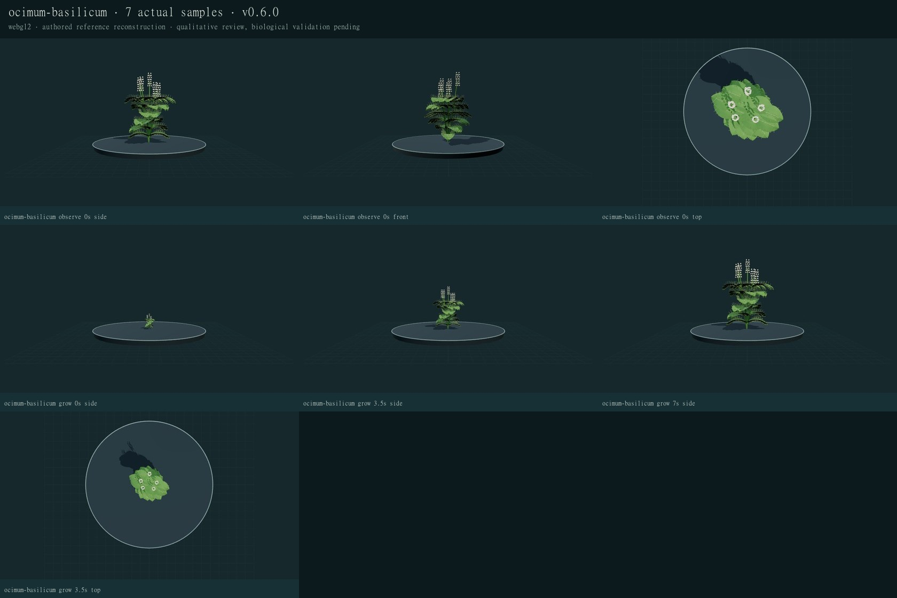
Plantae · Eukaryota · GBIF 5358748 · 7 actual samples · webgl2
White clover Trifolium repens
Open this model and its evidence → Compared and revised: Trifoliate leaves and a composite-looking cluster of separate small florets.
Compared and revised: Trifoliate leaves and a composite-looking cluster of separate small florets.
Remaining inaccuracies: Pale leaf chevrons, creeping stolon roots and individual papilionaceous florets are incomplete. Size study does not reproduce clonal spread or flowering.
Real image: Vinayaraj · CC BY-SA 4.0 · Original caption, imaging context and terms. Delivered SHA-256 eb0a6e88f6b1f4ec25021b2e031a0a3dd1b306bf9ce0b095a3cd819849b9fc49.
Source and movement scope
- Trifolium repens (Clover, Dutch Clover, Ladino Clover, Purple Dutch Clover, Shamrock, White Clover, White Sweet Clover) | North Carolina Extension Gardener Plant Toolbox: Species account or morphology/biology context only. No measured geometry, trajectory, rate or physiological model imported. Retrieved source account; general morphology only, not validation of this reconstruction. Retrieval: readable account.
- GBIF · Accepted species taxonomy: Taxonomic name/rank/family matching only; not behavior or native-range evidence.
- Licensed real organism reference and imaging context: Actual reference image and original caption/creator/license; not universal phenotype or biological validation.
- Anchored size study · partial: Anchored interpolation of the same mature reference surface. This is a display-size study, not a reconstructed developmental sequence, growth-rate model or organ-level ontogeny.
Same model identifier: reference-trifolium-repens. Display seconds have no calibrated biological time.
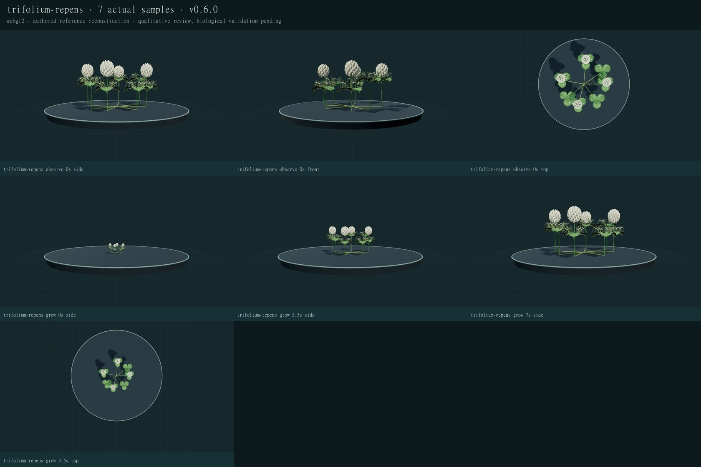
Plantae · Eukaryota · GBIF 3117424 · 7 actual samples · webgl2
Common daisy Bellis perennis
Open this model and its evidence → Compared and revised: Low leaf rosette, white rays and a distinct central disc.
Compared and revised: Low leaf rosette, white rays and a distinct central disc.
Remaining inaccuracies: Receptacle, ray/disc floret anatomy, pappus and natural leaf serration remain simplified. Growth playback scales a mature form rather than developing it.
Real image: Stefan.lefnaer · CC BY-SA 4.0 · Original caption, imaging context and terms. Delivered SHA-256 19d785818b8199a94e2a8a6c6d7af40c6135d5a1662212fed68e3ddb613a2121.
Source and movement scope
- Bellis perennis (Bairnwort, Banwood, Banwort, Bone Flower, Bonewort, Bruisewort, Common Gowan, Dog Daisy, Double Daisy, English Daisy, Goose Flower, Herb Margaret, Lawn Daisy, Marguerite, May Gowan, Noon Flower, True Daisy, Woundwort) | North Carolina Extension Gardener Plant Toolbox: Species account or morphology/biology context only. No measured geometry, trajectory, rate or physiological model imported. Retrieved source account; general morphology only, not validation of this reconstruction. Retrieval: readable account.
- GBIF · Accepted species taxonomy: Taxonomic name/rank/family matching only; not behavior or native-range evidence.
- Licensed real organism reference and imaging context: Actual reference image and original caption/creator/license; not universal phenotype or biological validation.
- Anchored size study · partial: Anchored interpolation of the same mature reference surface. This is a display-size study, not a reconstructed developmental sequence, growth-rate model or organ-level ontogeny.
Same model identifier: reference-bellis-perennis. Display seconds have no calibrated biological time.
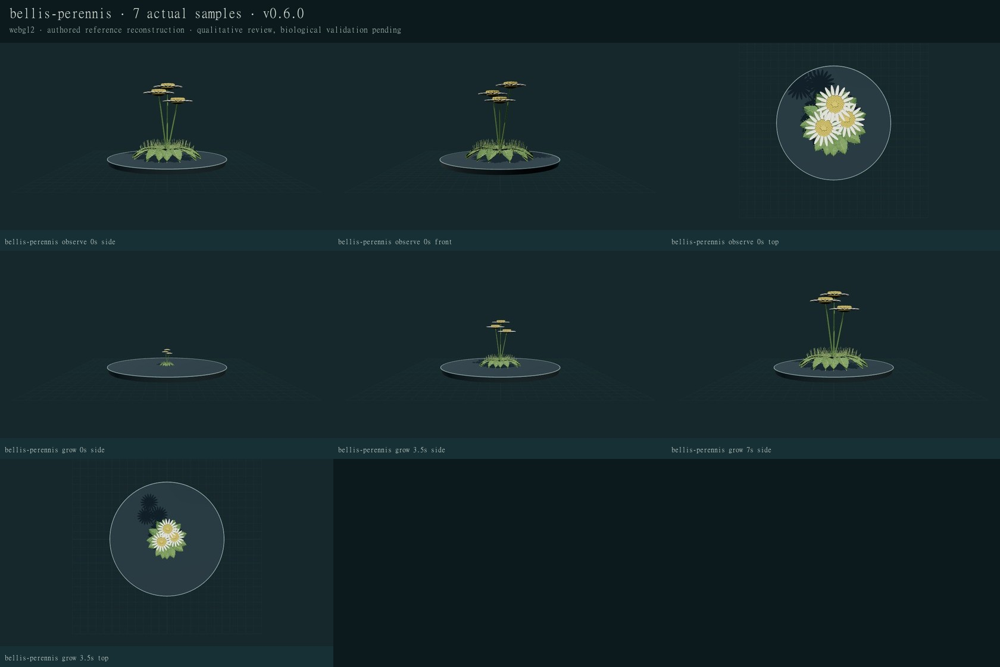
Plantae · Eukaryota · GBIF 3120060 · 7 actual samples · webgl2
Yarrow Achillea millefolium
Open this model and its evidence → Compared and revised: Corrected pinnule curvature, alternate divided leaves and small few-rayed heads in a flat cluster.
Compared and revised: Corrected pinnule curvature, alternate divided leaves and small few-rayed heads in a flat cluster.
Remaining inaccuracies: Fine pinnule branching, five-ray variation, involucral bracts and disc florets need detailed work. No measured developmental or wind response.
Real image: SAplants · CC BY-SA 4.0 · Original caption, imaging context and terms. Delivered SHA-256 fe530e961d9ae06a163e96d82b867bbe7332b796b8fe92d7201da201c48d7404.
Source and movement scope
- Achillea millefolium (Common Yarrow, Devil's Nettle, Dog Daisy, Milfoil, Soldier's Woundwort, Thousandleaf, Westen Yarrow, Yarrow) | North Carolina Extension Gardener Plant Toolbox: Species account or morphology/biology context only. No measured geometry, trajectory, rate or physiological model imported. Retrieved source account; general morphology only, not validation of this reconstruction. Retrieval: readable account.
- GBIF · Accepted species taxonomy: Taxonomic name/rank/family matching only; not behavior or native-range evidence.
- Licensed real organism reference and imaging context: Actual reference image and original caption/creator/license; not universal phenotype or biological validation.
- Anchored size study · partial: Anchored interpolation of the same mature reference surface. This is a display-size study, not a reconstructed developmental sequence, growth-rate model or organ-level ontogeny.
Same model identifier: reference-achillea-millefolium. Display seconds have no calibrated biological time.
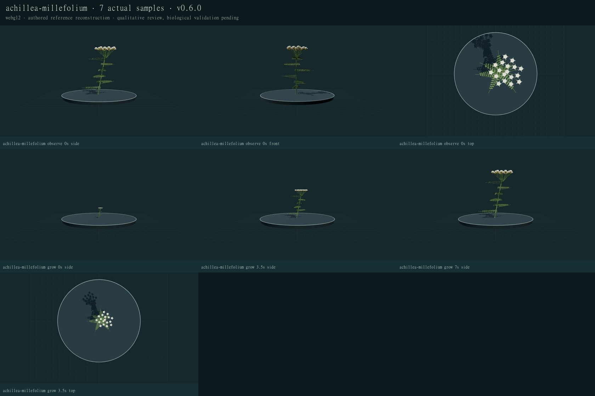
Plantae · Eukaryota · GBIF 5414995 · 7 actual samples · webgl2
Common foxglove Digitalis purpurea
Open this model and its evidence → Compared and revised: One-sided drooping tubular raceme and basal/cauline leaves; corrected leaf curvature.
Compared and revised: One-sided drooping tubular raceme and basal/cauline leaves; corrected leaf curvature.
Remaining inaccuracies: Spotted corolla interiors, tube throats, bilateral lips and exact flower attachment need refinement. Uniform scaling does not model acropetal flowering.
Real image: Jörg Hempel · CC BY-SA 3.0 de · Original caption, imaging context and terms. Delivered SHA-256 430f57cccd07e56e2934ed763300ce68973299cb51e7be170d4e76ea481992fa.
Source and movement scope
Same model identifier: reference-digitalis-purpurea. Display seconds have no calibrated biological time.
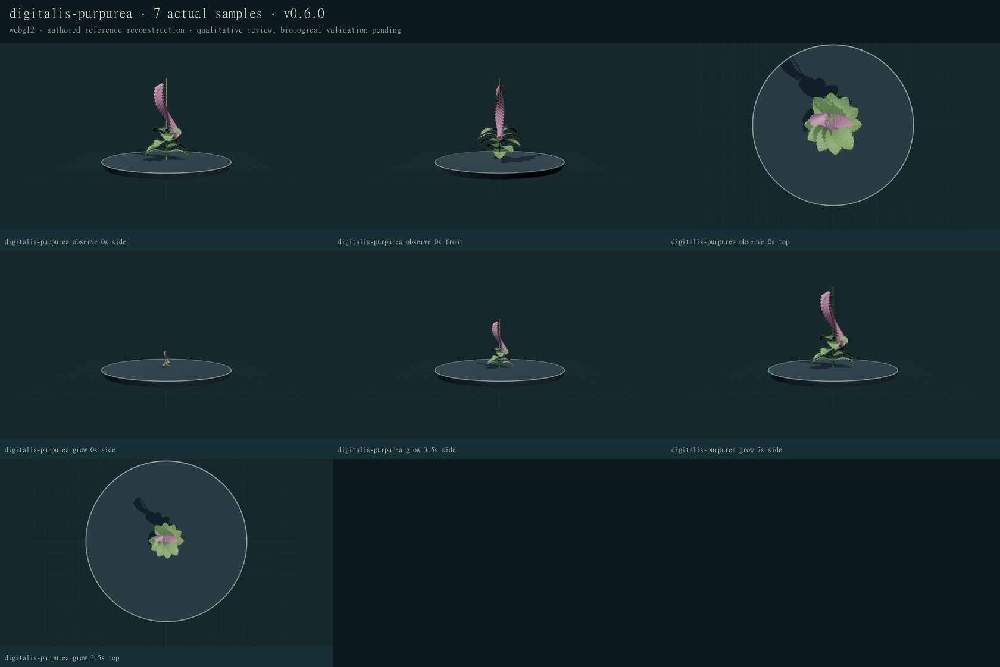
Plantae · Eukaryota · GBIF 5275012 · 7 actual samples · webgl2
Bracken Pteridium aquilinum
Open this model and its evidence → Compared and revised: Divided triangular frond with length-scaled pinnules, avoiding the former curled small leaves.
Compared and revised: Divided triangular frond with length-scaled pinnules, avoiding the former curled small leaves.
Remaining inaccuracies: Pinnule margins, venation and marginal sori are approximate. The action labelled size study does not actually unfold a circinate crozier.
Real image: Rasbak · CC BY-SA 3.0 · Original caption, imaging context and terms. Delivered SHA-256 b9f6fce409650d3cadb58c2433eda365f709e0dab7ab4684e07c1d866d492acb.
Source and movement scope
- Pteridophytes of Wisconsin: Pteridium aquilinum, bracken fern: Morphology/biology context only; no measured geometry or movement imported. Retrieved source account; general morphology only, not validation of this reconstruction. Retrieval: readable account.
- GBIF · Accepted species taxonomy: Taxonomic name/rank/family matching only; not behavior or native-range evidence.
- Licensed real organism reference and imaging context: Actual reference image and original caption/creator/license; not universal phenotype or biological validation.
- Anchored size study · partial: Anchored interpolation of the same mature reference surface. This is a display-size study, not a reconstructed developmental sequence, growth-rate model or organ-level ontogeny.
Same model identifier: reference-pteridium-aquilinum. Display seconds have no calibrated biological time.
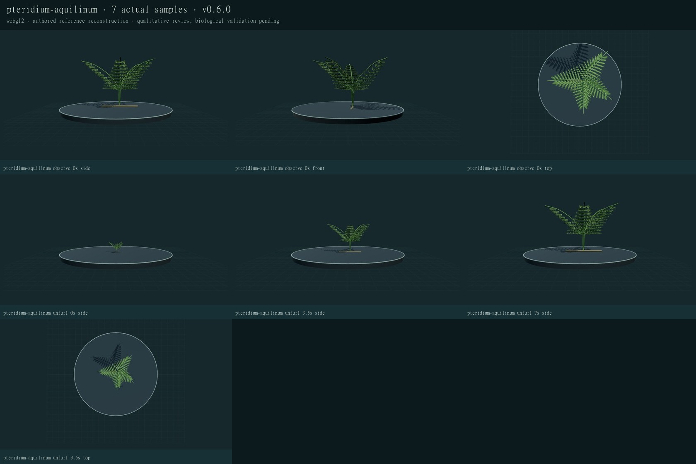
Plantae · Eukaryota · GBIF 7924597 · 7 actual samples · webgl2
Field horsetail Equisetum arvense
Open this model and its evidence → Compared and revised: Jointed sterile shoot with radial branch whorls.
Compared and revised: Jointed sterile shoot with radial branch whorls.
Remaining inaccuracies: Sheath teeth, fine ridges, underground rhizome and separate fertile shoot are unresolved. This vegetative stage does not represent its complete life cycle.
Real image: MPF · CC BY-SA 3.0 · Original caption, imaging context and terms. Delivered SHA-256 113b3b384b50af3dc1746f42c3b9397848abfc7f3503b309621e79f45a5df86a.
Source and movement scope
Same model identifier: reference-equisetum-arvense. Display seconds have no calibrated biological time.
Plantae · Eukaryota · GBIF 2688570 · 7 actual samples · webgl2
Common liverwort Marchantia polymorpha
Open this model and its evidence → Compared and revised: Flattened branching thallus and vegetative gemma-cup cues; selected a gemma-cup photo instead of reproductive stalks.
Compared and revised: Flattened branching thallus and vegetative gemma-cup cues; selected a gemma-cup photo instead of reproductive stalks.
Remaining inaccuracies: Air pores, gemma anatomy, ventral rhizoids and thallus margins need refinement. Sexual structures and alternation of generations are absent.
Real image: Krzysztof Ziarnek, Kenraiz · CC BY-SA 4.0 · Original caption, imaging context and terms. Delivered SHA-256 264a5f54b65e504f767f6bc97cfba610ff48a97188fa7b6581e0d5cdbfd78600.
Source and movement scope
Same model identifier: reference-marchantia-polymorpha. Display seconds have no calibrated biological time.
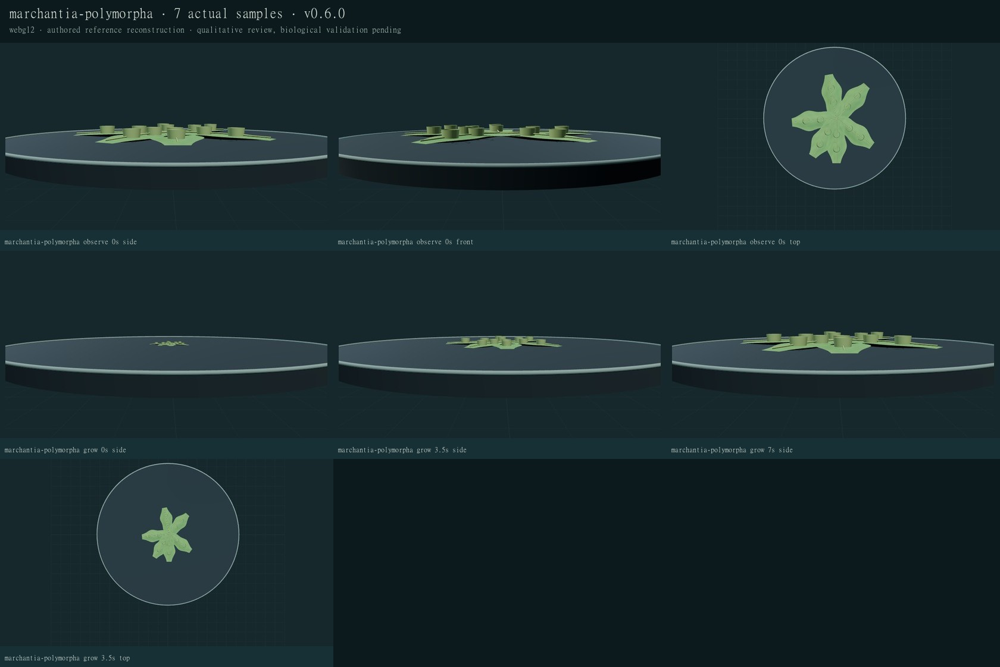
Fungi · Eukaryota · GBIF 2594602 · 7 actual samples · webgl2
Yellow morel Morchella esculenta
Open this model and its evidence → Compared and revised: Replaced an inverted regular checker pattern with irregular dark depressions and pale ridges; corrected cap/stipe proportions.
Compared and revised: Replaced an inverted regular checker pattern with irregular dark depressions and pale ridges; corrected cap/stipe proportions.
Remaining inaccuracies: Pits are surface relief rather than a reconstructed hollow internal network. The esculenta complex needs molecular/specimen validation; size scaling is not fruiting development.
Real image: TOMMES-WIKI · CC BY-SA 3.0 · Original caption, imaging context and terms. Delivered SHA-256 3c4e3dd56ac01dcf88a95f800074fb8c634a031065938911135dc5393e37f7b0.
Source and movement scope
- Biology reference · Morchella esculenta: Morphology/biology context only; no measured geometry or movement imported. Full source retrieval was limited; source identity/indexed context and geometry require further review. Retrieval: limited; further reading needed.
- GBIF · Accepted species taxonomy: Taxonomic name/rank/family matching only; not behavior or native-range evidence.
- Licensed real organism reference and imaging context: Actual reference image and original caption/creator/license; not universal phenotype or biological validation.
- Fruit-body size study · partial: Anchored interpolation of the same mature reference surface. This is a display-size study, not a reconstructed developmental sequence, growth-rate model or organ-level ontogeny.
Same model identifier: reference-morchella-esculenta. Display seconds have no calibrated biological time.
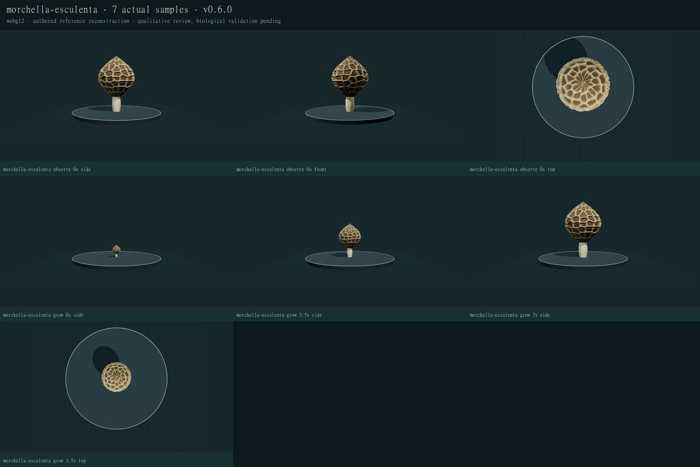
Fungi · Eukaryota · GBIF 5249504 · 7 actual samples · webgl2
Golden chanterelle Cantharellus cibarius
Open this model and its evidence → Compared and revised: Wavy cap and decurrent fold cues distinguish it from true-gilled mushrooms.
Compared and revised: Wavy cap and decurrent fold cues distinguish it from true-gilled mushrooms.
Remaining inaccuracies: Fold branching/anastomosis and cap flesh remain approximate. North American lookalikes in genus sources must not be treated as European C. cibarius measurements.
Real image: Strobilomyces · CC BY-SA 3.0 · Original caption, imaging context and terms. Delivered SHA-256 9531e0de88ac03b0eb1b35daeaea3583d53cf992362def730ae70e231edbbdd6.
Source and movement scope
- Cantharellus "cibarius" (MushroomExpert.Com): Species account or morphology/biology context only. No measured geometry, trajectory, rate or physiological model imported. Retrieved source account; general morphology only, not validation of this reconstruction. Retrieval: readable account.
- GBIF · Accepted species taxonomy: Taxonomic name/rank/family matching only; not behavior or native-range evidence.
- Licensed real organism reference and imaging context: Actual reference image and original caption/creator/license; not universal phenotype or biological validation.
- Fruit-body size study · partial: Anchored interpolation of the same mature reference surface. This is a display-size study, not a reconstructed developmental sequence, growth-rate model or organ-level ontogeny.
Same model identifier: reference-cantharellus-cibarius. Display seconds have no calibrated biological time.
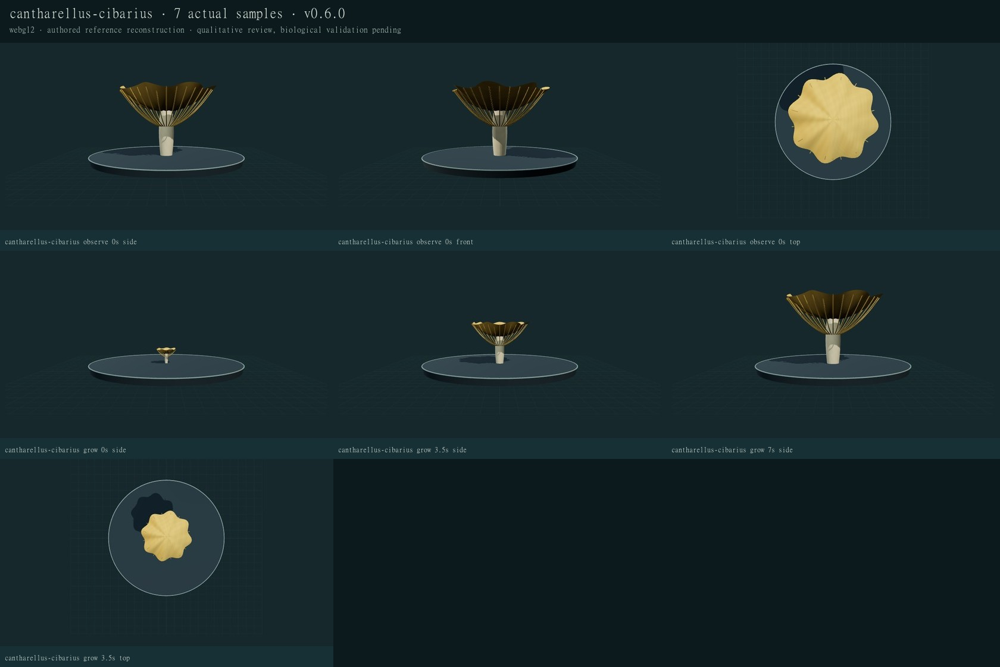
Fungi · Eukaryota · GBIF 5954958 · 7 actual samples · webgl2
Porcini Boletus edulis
Open this model and its evidence → Compared and revised: Convex cap and pore-like underside with a stout stipe.
Compared and revised: Convex cap and pore-like underside with a stout stipe.
Remaining inaccuracies: Pore tubes, upper-stipe reticulum, developmental color change and flesh are not reconstructed. Size study is not mushroom ontogeny.
Real image: ReddishClover · CC BY-SA 4.0 · Original caption, imaging context and terms. Delivered SHA-256 a161e17ad7b65bdedabb71eb273902d35f70fdb4895eb60200c1b19a05f2e1eb.
Source and movement scope
- Boletus edulis (MushroomExpert.Com): Species account or morphology/biology context only. No measured geometry, trajectory, rate or physiological model imported. Retrieved source account; general morphology only, not validation of this reconstruction. Retrieval: readable account.
- GBIF · Accepted species taxonomy: Taxonomic name/rank/family matching only; not behavior or native-range evidence.
- Licensed real organism reference and imaging context: Actual reference image and original caption/creator/license; not universal phenotype or biological validation.
- Fruit-body size study · partial: Anchored interpolation of the same mature reference surface. This is a display-size study, not a reconstructed developmental sequence, growth-rate model or organ-level ontogeny.
Same model identifier: reference-boletus-edulis. Display seconds have no calibrated biological time.
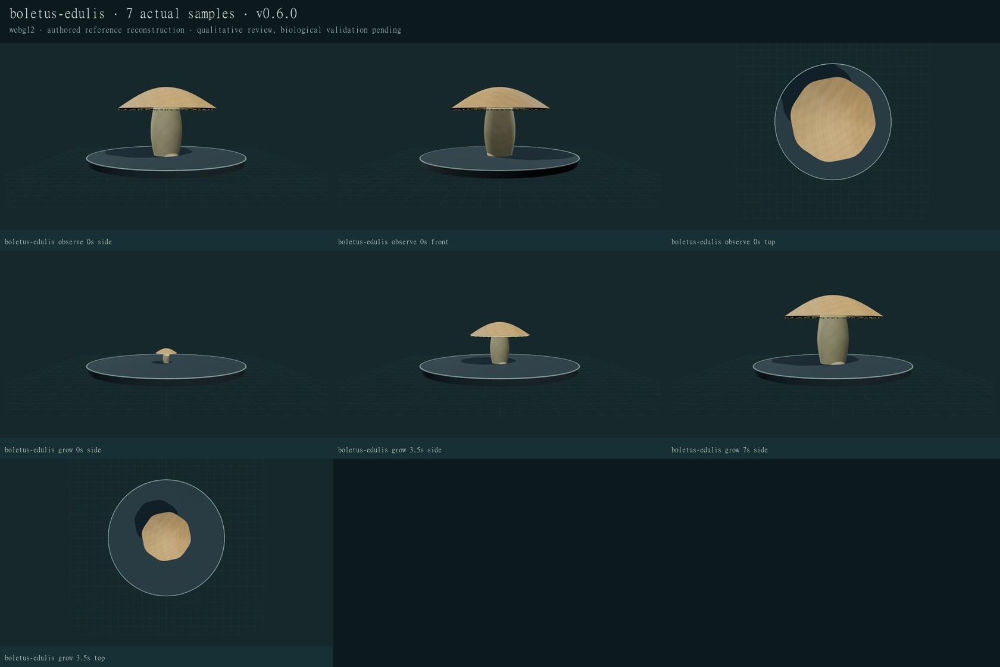
Fungi · Eukaryota · GBIF 2548311 · 7 actual samples · webgl2
Turkey-tail fungus Trametes versicolor
Open this model and its evidence → Compared and revised: Thin overlapping bands of bracket tissue with concentric contrasting colors.
Compared and revised: Thin overlapping bands of bracket tissue with concentric contrasting colors.
Remaining inaccuracies: Underside pores, hairy surface and substrate attachment need refinement. Banding is authored pigment rather than a scan; size scaling is not colony growth.
Real image: Jerzy Opioła · CC BY-SA 3.0 · Original caption, imaging context and terms. Delivered SHA-256 8b6266cf81446d7f060717cbba98496a4544c7eec005354cd33e1fd2e4b04652.
Source and movement scope
- Trametes versicolor: The Turkey Tail (MushroomExpert.Com): Species account or morphology/biology context only. No measured geometry, trajectory, rate or physiological model imported. Retrieved source account; general morphology only, not validation of this reconstruction. Retrieval: readable account.
- GBIF · Accepted species taxonomy: Taxonomic name/rank/family matching only; not behavior or native-range evidence.
- Licensed real organism reference and imaging context: Actual reference image and original caption/creator/license; not universal phenotype or biological validation.
- Fruit-body size study · partial: Anchored interpolation of the same mature reference surface. This is a display-size study, not a reconstructed developmental sequence, growth-rate model or organ-level ontogeny.
Same model identifier: reference-trametes-versicolor. Display seconds have no calibrated biological time.
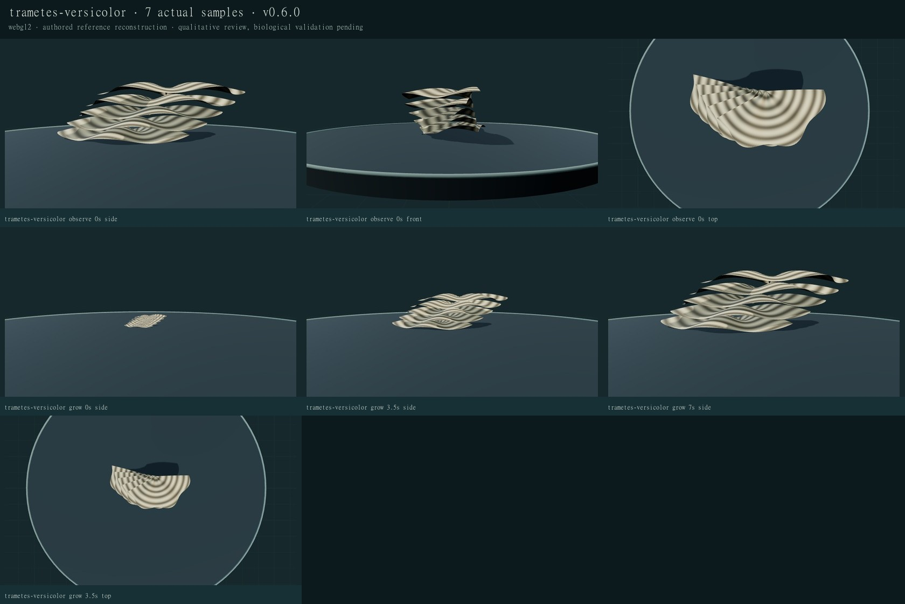
Fungi · Eukaryota · GBIF 2537743 · 7 actual samples · webgl2
Shiitake Lentinula edodes
Open this model and its evidence → Compared and revised: Brown scaled cap, pale gills and separate stipe.
Compared and revised: Brown scaled cap, pale gills and separate stipe.
Remaining inaccuracies: Gill attachment, scale distribution and strain/stage-specific cap proportions need closer reconstruction. Published cultivation context does not validate the geometry or growth timing.
Real image: frankenstoen from Portland, Oregon · CC BY 2.0 · Original caption, imaging context and terms. Delivered SHA-256 d09e4e3f6ddd2861fe8d5bfd9b280993828f1b994e7b18e7a23db1e0385946b3.
Source and movement scope
Same model identifier: reference-lentinula-edodes. Display seconds have no calibrated biological time.
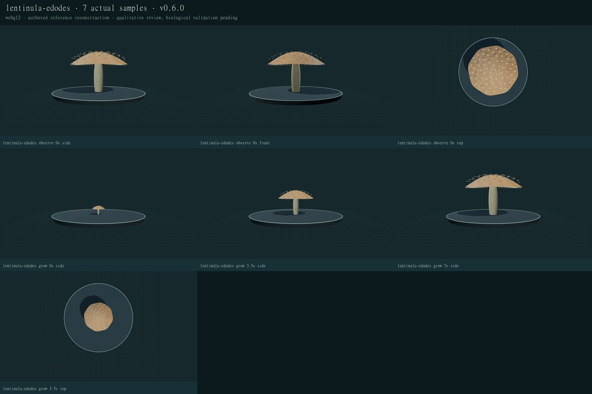
Fungi · Eukaryota · GBIF 7987658 · 7 actual samples · webgl2
Shaggy ink cap Coprinus comatus
Open this model and its evidence → Compared and revised: Tall pale shaggy cap and slender stipe.
Compared and revised: Tall pale shaggy cap and slender stipe.
Remaining inaccuracies: Cap scales, gill darkening and ink-like deliquescence are not implemented. The model represents an earlier stage than an inky mature reference can show.
Real image: Bigredwine1 · CC BY-SA 4.0 · Original caption, imaging context and terms. Delivered SHA-256 49d3eeb9c86a97c7496b75a39c84185d47d1f976468bb5df4f986470a53fdd82.
Source and movement scope
- Coprinus comatus: The Shaggy Mane (MushroomExpert.Com): Species account or morphology/biology context only. No measured geometry, trajectory, rate or physiological model imported. Retrieved source account; general morphology only, not validation of this reconstruction. Retrieval: readable account.
- GBIF · Accepted species taxonomy: Taxonomic name/rank/family matching only; not behavior or native-range evidence.
- Licensed real organism reference and imaging context: Actual reference image and original caption/creator/license; not universal phenotype or biological validation.
- Fruit-body size study · partial: Anchored interpolation of the same mature reference surface. This is a display-size study, not a reconstructed developmental sequence, growth-rate model or organ-level ontogeny.
Same model identifier: reference-coprinus-comatus. Display seconds have no calibrated biological time.
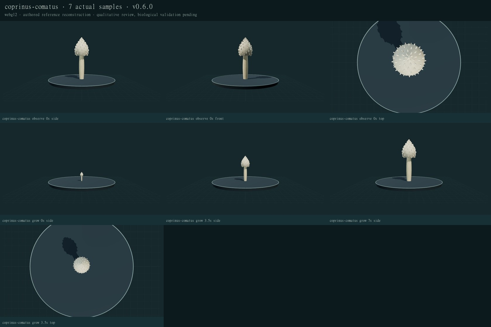
Fungi · Eukaryota · GBIF 2558944 · 7 actual samples · webgl2
Black bread mould Rhizopus stolonifer
Open this model and its evidence → Compared and revised: Stolons/rhizoid cues and separate spherical sporangia; label corrected to colony size study.
Compared and revised: Stolons/rhizoid cues and separate spherical sporangia; label corrected to colony size study.
Remaining inaccuracies: Columella, sporangiospores and exact rhizoid arrangement are approximate. Non-septate hyphae are only a visible cue; no branching, sporulation or actual growth process.
Real image: WDKeeper · CC BY-SA 4.0 · Original caption, imaging context and terms. Delivered SHA-256 26d158bf9c417afff34ae111d72e570dc4db4d3c05c48042883a5b3da8769e94.
Source and movement scope
- Biology reference · Rhizopus stolonifer: Institutional genus description and species-level context read; no measurements or developmental sequence imported. Retrieval: readable account.
- GBIF · Accepted species taxonomy: Taxonomic name/rank/family matching only; not behavior or native-range evidence.
- Licensed real organism reference and imaging context: Actual reference image and original caption/creator/license; not universal phenotype or biological validation.
- Colony size study · partial: Anchored interpolation of the same mature reference surface. This is a display-size study, not a reconstructed developmental sequence, growth-rate model or organ-level ontogeny.
Same model identifier: reference-rhizopus-stolonifer. Display seconds have no calibrated biological time.
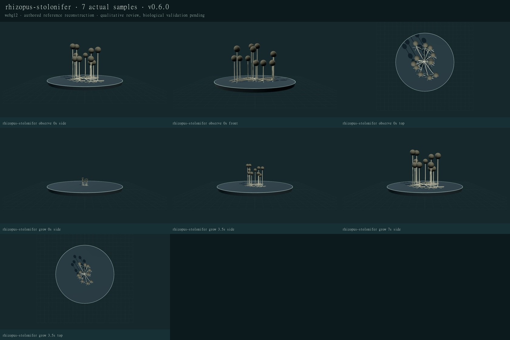
Fungi · Eukaryota · GBIF 3465658 · 7 actual samples · webgl2
Black aspergillus Aspergillus niger
Open this model and its evidence → Compared and revised: Radiating conidial-head cues use shared instances; label corrected to colony size study.
Compared and revised: Radiating conidial-head cues use shared instances; label corrected to colony size study.
Remaining inaccuracies: Vesicle/phialide organization, conidial chains and septate hyphae need microscopy-based reconstruction. Black aspergilli species identity cannot be established from this illustration.
Real image: CDC / Dr. Lucille K. Georg, PHIL #3964 (1955) · Public domain · Original caption, imaging context and terms. Delivered SHA-256 50a4082e426c61e5bf67489b28378e579b276a575509d07040e2c3ba2e1e6d7a.
Source and movement scope
- Biology reference · Aspergillus niger: Institutional genus description and species-level context read; no measurements or developmental sequence imported. Retrieval: readable account.
- GBIF · Accepted species taxonomy: Taxonomic name/rank/family matching only; not behavior or native-range evidence.
- Licensed real organism reference and imaging context: Actual reference image and original caption/creator/license; not universal phenotype or biological validation.
- Colony size study · partial: Anchored interpolation of the same mature reference surface. This is a display-size study, not a reconstructed developmental sequence, growth-rate model or organ-level ontogeny.
Same model identifier: reference-aspergillus-niger. Display seconds have no calibrated biological time.
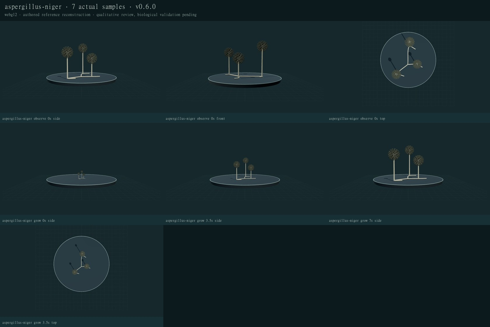
Microeukaryotes · Eukaryota · GBIF 10229378 · 7 actual samples · webgl2
Tetrahymena Tetrahymena thermophila
Open this model and its evidence → Compared and revised: Ciliated cell outline, oral-region cue and internal nuclear cue.
Compared and revised: Ciliated cell outline, oral-region cue and internal nuclear cue.
Remaining inaccuracies: Micronucleus, cortical rows and organelles are incomplete. Reference fluorescence colors are imaging channels, not natural body pigmentation. Cilia are sparse authored cues, not a hydrodynamic simulation.
Real image: Public Library of Science / Richard Robinson (2006), figure 1 · CC BY 2.5 · Original caption, imaging context and terms. Delivered SHA-256 21c4caed0c25f13fbf2c4ff9004c746d005d8af53a25e30d1fd77423e0a45c36.
Source and movement scope
- Macronuclear Genome Sequence of the Ciliate Tetrahymena thermophila, a Model Eukaryote | PLOS Biology: Species account or morphology/biology context only. No measured geometry, trajectory, rate or physiological model imported. Retrieved source account; general morphology only, not validation of this reconstruction. Retrieval: readable account.
- GBIF · Accepted species taxonomy: Taxonomic name/rank/family matching only; not behavior or native-range evidence.
- Licensed real organism reference and imaging context: Actual reference image and original caption/creator/license; not universal phenotype or biological validation.
- Ciliary-beat study · partial: Authored reference reconstruction from qualitative morphology and the separately licensed image. Shape, pigmentation, stage, dimensions and playback are not measured or independently validated. Appendage/deformation controls are partial studies; feeding, forces, fluid dynamics and calibrated locomotion are absent.
Same model identifier: reference-tetrahymena-thermophila. Display seconds have no calibrated biological time.
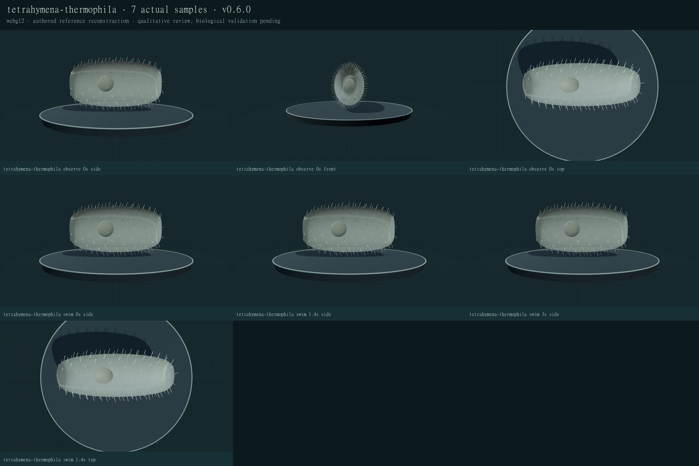
Microeukaryotes · Eukaryota · GBIF 8112799 · 7 actual samples · webgl2
Blue stentor Stentor coeruleus
Open this model and its evidence → Compared and revised: Trumpet-like attached cell and oral ciliary rim with a contraction study.
Compared and revised: Trumpet-like attached cell and oral ciliary rim with a contraction study.
Remaining inaccuracies: Macronuclear beads, cortical stripe spacing and holdfast anatomy are approximate. Whole-surface shortening does not reconstruct myonemes or measured rapid contraction.
Real image: Flupke59 · CC BY-SA 3.0 · Original caption, imaging context and terms. Delivered SHA-256 7905d610fb0f689cb2834a895e40c45f15b9e9d8ec469a82109c43c818ec97f3.
Source and movement scope
- THE CONTRACTILE PROCESS IN THE CILIATE, STENTOR COERULEUS : I. The Role of Microtubules and Filaments - PMC: Species account or morphology/biology context only. No measured geometry, trajectory, rate or physiological model imported. Retrieved source account; general morphology only, not validation of this reconstruction. Retrieval: readable account.
- GBIF · Accepted species taxonomy: Taxonomic name/rank/family matching only; not behavior or native-range evidence.
- Licensed real organism reference and imaging context: Actual reference image and original caption/creator/license; not universal phenotype or biological validation.
- Contraction study · partial: Authored reference reconstruction from qualitative morphology and the separately licensed image. Shape, pigmentation, stage, dimensions and playback are not measured or independently validated. Appendage/deformation controls are partial studies; feeding, forces, fluid dynamics and calibrated locomotion are absent.
Same model identifier: reference-stentor-coeruleus. Display seconds have no calibrated biological time.
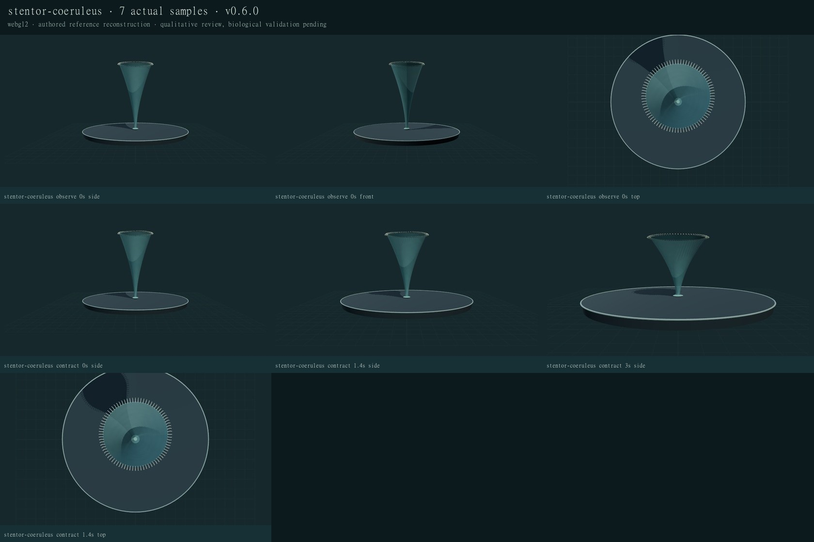
Microeukaryotes · Eukaryota · GBIF 7598904 · 7 actual samples · webgl2
Horned freshwater dinoflagellate Ceratium hirundinella
Open this model and its evidence → Compared and revised: Replaced a spherical/conical assembly with one flattened horned thecal outline and unequal horns.
Compared and revised: Replaced a spherical/conical assembly with one flattened horned thecal outline and unequal horns.
Remaining inaccuracies: Thecal plate pattern, flagella and horn-number/length variability are unresolved. Orientation changes are not calibrated swimming or rotation driven by flagella.
Real image: Kairi Maileht · CC BY-SA 3.0 · Original caption, imaging context and terms. Delivered SHA-256 d96b2dfa45a4bca30c14350d3645f2356048acbfa1f6ba22bc67325efe8645e8.
Source and movement scope
- Ceratium Morphology: Morphology/biology context only; no measured geometry or movement imported. Retrieved source account; general morphology only, not validation of this reconstruction. Retrieval: readable account.
- GBIF · Accepted species taxonomy: Taxonomic name/rank/family matching only; not behavior or native-range evidence.
- Licensed real organism reference and imaging context: Actual reference image and original caption/creator/license; not universal phenotype or biological validation.
- Orientation study · partial: Authored reference reconstruction from qualitative morphology and the separately licensed image. Shape, pigmentation, stage, dimensions and playback are not measured or independently validated. Appendage/deformation controls are partial studies; feeding, forces, fluid dynamics and calibrated locomotion are absent.
Same model identifier: reference-ceratium-hirundinella. Display seconds have no calibrated biological time.
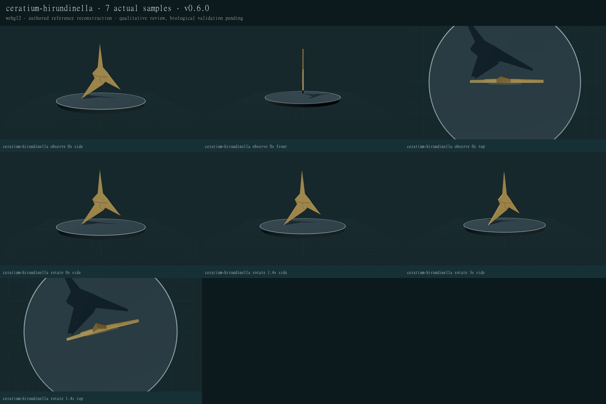
Microeukaryotes · Eukaryota · GBIF 2639377 · 7 actual samples · webgl2
Volvox Volvox carteri
Open this model and its evidence → Compared and revised: Spherical colony, surface-cell cues and daughter-colony cues.
Compared and revised: Spherical colony, surface-cell cues and daughter-colony cues.
Remaining inaccuracies: Five hundred display instances are a rendering choice, not a biological cell count. Extracellular matrix, flagellar pairs and phototaxis are absent; rotation is an orientation study.
Real image: Photo courtesy of Aurora M. Nedelcu, from the Volvocales Information Project ( http://www.unbf.ca/vip/index.htm ). · CC BY 3.0 · Original caption, imaging context and terms. Delivered SHA-256 a0aff7ca6a7344700dc65dc697458319db16a78dbeb40398a93671816f775ca8.
Source and movement scope
- Genomic Analysis of Organismal Complexity in the Multicellular Green Alga Volvox carteri - PMC: Morphology/biology context only; no measured geometry or movement imported. Retrieved source account; general morphology only, not validation of this reconstruction. Retrieval: readable account.
- GBIF · Accepted species taxonomy: Taxonomic name/rank/family matching only; not behavior or native-range evidence.
- Licensed real organism reference and imaging context: Actual reference image and original caption/creator/license; not universal phenotype or biological validation.
- Orientation study · partial: Authored reference reconstruction from qualitative morphology and the separately licensed image. Shape, pigmentation, stage, dimensions and playback are not measured or independently validated. Appendage/deformation controls are partial studies; feeding, forces, fluid dynamics and calibrated locomotion are absent.
Same model identifier: reference-volvox-carteri. Display seconds have no calibrated biological time.
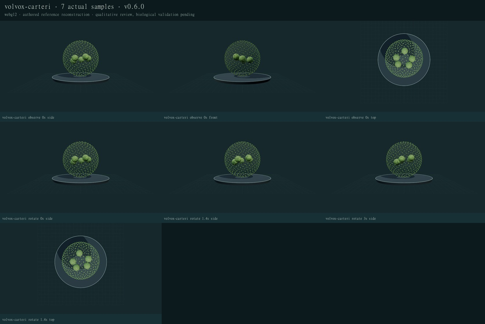
Microeukaryotes · Eukaryota · GBIF 8046432 · 7 actual samples · webgl2
Spirostomum Spirostomum ambiguum
Open this model and its evidence → Compared and revised: Elongated cell and same-surface shortening/thickening study.
Compared and revised: Elongated cell and same-surface shortening/thickening study.
Remaining inaccuracies: Nuclear pattern, ciliary rows and contractile machinery remain incomplete. Related Spirostomum taxa are not interchangeable, and no ultrafast measured contraction rate is imported.
Real image: Viktoria Hyzhniak · CC BY 4.0 · Original caption, imaging context and terms. Delivered SHA-256 2cdbec89b8df2b4acd45982d269260f917d4a43342530f4fb40bee5ff3b76cc2.
Source and movement scope
- Biology reference · Spirostomum ambiguum: Species account or morphology/biology context only. No measured geometry, trajectory, rate or physiological model imported. Full source retrieval was limited; source identity/indexed context and geometry require further review. Retrieval: limited; further reading needed.
- GBIF · Accepted species taxonomy: Taxonomic name/rank/family matching only; not behavior or native-range evidence.
- Licensed real organism reference and imaging context: Actual reference image and original caption/creator/license; not universal phenotype or biological validation.
- Contraction study · partial: Authored reference reconstruction from qualitative morphology and the separately licensed image. Shape, pigmentation, stage, dimensions and playback are not measured or independently validated. Appendage/deformation controls are partial studies; feeding, forces, fluid dynamics and calibrated locomotion are absent.
Same model identifier: reference-spirostomum-ambiguum. Display seconds have no calibrated biological time.
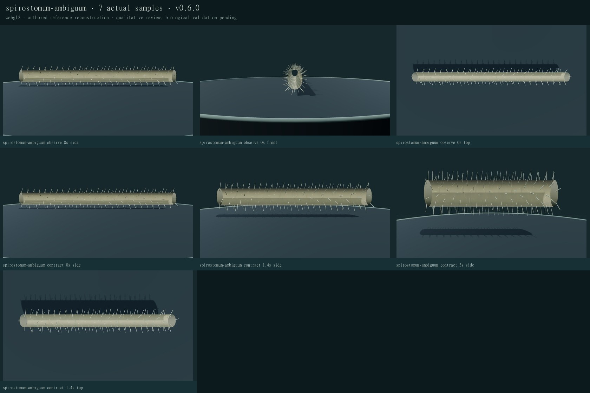
Bacteria · Bacteria · GBIF 8225325 · 7 actual samples · webgl2
Common nostoc Nostoc commune
Open this model and its evidence →![Cyanobacteria - Nostoc commune. The area in which these colonies were found is the foreground that is shown covered with snow in the following photo: 1158049 . The seaweed-like mass shown here measured 15 cm across. It is a colony of cyanobacteria; specifically, it is Nostoc commune. (For more on cyanobacteria, see 1470400 , taken on the same day, in the same place.) [See http://www.algaebase.org/search/species/detail/?species_id=24479 (at Algaebase) for some pictures, and for detailed taxonomic information.] Within its outer membrane, the colony contains a brownish gel in which chains of green cells are suspended. The colonies vary greatly in appearance according to how wet they are, but are generally olive-green to brown. Although I've shown a single specimen here, the area was covered in seaweed-like patches, up to several square metres in size. Two factors account for the abundance: (1) for the west of Scotland, the summer of 2009 was the second wettest since records began in 1914, and (2) there is great deal of concrete here, from large chunks to tiny fragments (the Nostoc pruniforme link, above, explains why this favours their growth). The abundance of N. commune was not confined to this spot; later on the same day, I noticed that a little concrete footbridge (NS 3984 7708) across the Murroch Burn in Kilmalid was also densely covered. Incidentally, when they dry out, Nost](../../../assets/photo-nostoc-commune-D5rQhPwG.jpg) Compared and revised: Cell-chain view with occasional differentiated-cell cues.
Compared and revised: Cell-chain view with occasional differentiated-cell cues.
Remaining inaccuracies: Reference photo shows the macroscopic gelatinous colony, whereas this model is a cellular-scale view. Heterocyst frequency, sheath organization and colony topology are unmeasured. Size scaling is not cell division or nitrogen fixation.
Real image: Lairich Rig · CC BY-SA 2.0 · Original caption, imaging context and terms. Delivered SHA-256 fcf81af38ddf550db1e5f49623e82b82b1ca8ab92d496f1c66c014ac995415c4.
Source and movement scope
Same model identifier: reference-nostoc-commune. Display seconds have no calibrated biological time.
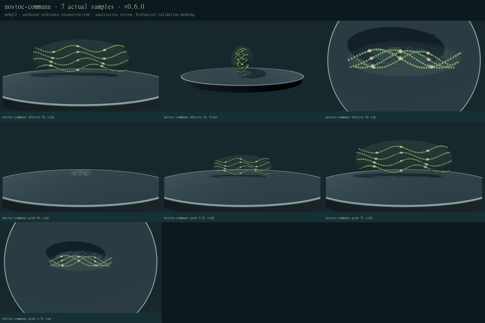
Archaea · Archaea · GBIF 11103111 · 3 actual samples · webgl2
Square haloarchaeon Haloquadratum walsbyi
Open this model and its evidence → Compared and revised: Flattened quadrangular cell with internal gas-vesicle cues and no invented flagella/cilia.
Compared and revised: Flattened quadrangular cell with internal gas-vesicle cues and no invented flagella/cilia.
Remaining inaccuracies: Phase-contrast reference includes a folded corner that this rigid outline does not reproduce. Thickness and internal counts are not measured. Division is unavailable.
Real image: Matilde Sublimi Saponetti, Fabrizio Bobba, Grazia Salerno, Alessandro Scarfato, Angela Corcelli and Annamaria Cucolo (2011), figure 1 · CC BY 2.5 · Original caption, imaging context and terms. Delivered SHA-256 bdf2af06c7102f3a932b4de633342de9cca5e2a23715351f184772eb150a7fd1.
Source and movement scope
Same model identifier: reference-haloquadratum-walsbyi. Display seconds have no calibrated biological time.
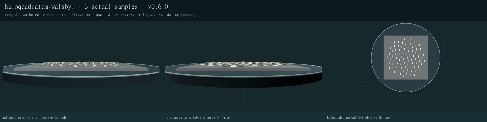